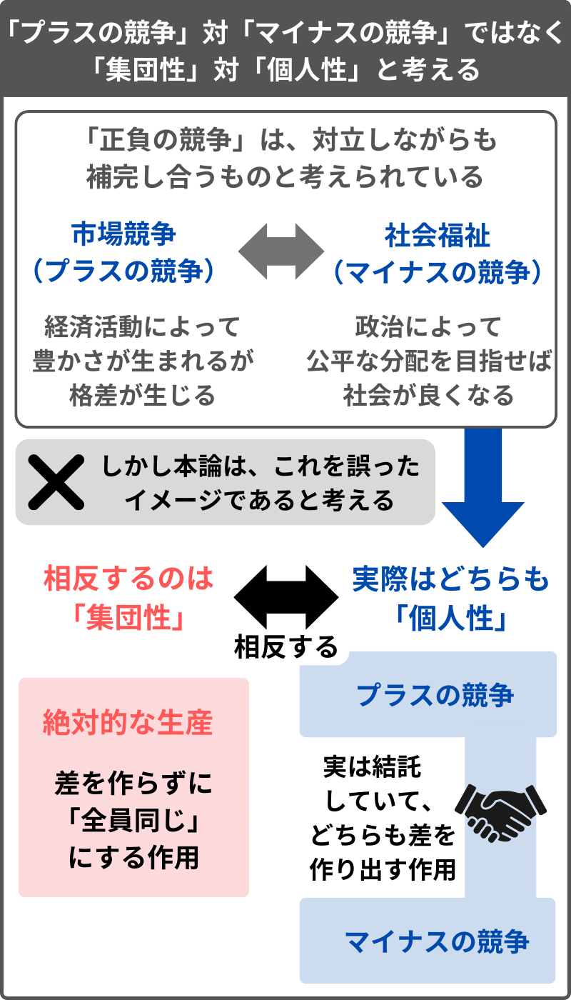

第1章で、「集団性（豊かさ）」と「個人性（正しさ）」が相反するという見方を提示し、第2章ではその理由を説明した。
この第3章では、主に「個人性（正しさ）」について述べる。
まず最初に、現代の先進諸国において「個人性（正しさ）」が過剰になっている理由を説明する。
次に、「個人性」という概念を「プラスの競争（ビジネス・メリトクラシー）」と「マイナスの競争（政治的正しさ）」に分割し、一見して対立しているように見える両者が、実は結託する作用であることを示す。
「個人性」の作用は、社会に「複雑化」をもたらすが、本章では、それが「科学」や「専門」といった領域に多くの影響を与えていることを指摘する。
現在は、「理解が進むほど福祉が充実する」といったような倒錯のもとに「個人性（正しさ）」が重視されやすいが、むしろ「正しさ」こそが、福祉を可能にする余剰を切り崩していく性質を持つ。
目次
- 3.1 「豊かさ」の結果、「正しさ」が発生する
- 3.2 「ナショナリズム」と「グローバリズム」の類似点と相違点
- 3.3 「中間（ローカル）」と「普遍的個人（グローバル）」
- 3.4 「多様性」の皮肉
- 3.5 「自分を少数派と考える個人」が最大多数派になる
- 3.6 弱者性を競う「マイナスの競争」
- 3.7 「プラスの競争」と「マイナスの競争」は連動している
- 3.8 「科学」における「集団性」と「個人性」
- 3.9 科学に貢献したいと考える人ほど不利になる「学術のルール」
- 3.10 大学を国民のリソースで運営する正当性が疑われている
- 3.11 「専門性」はいかにして機能しているか
- 3.12 「専門性」が細分化しすぎると社会的分業が成り立たなくなる
- 3.13 「ビジネス」と「政治的正しさ」の結託（企業の場合）
- 3.14 「ビジネス」と「政治的正しさ」の結託（家族の場合）
- 3.15 「理解」が進みすぎると、むしろ福祉は崩壊する
- 3.16 「正しさ」が「豊かさ」に反転すると「ベーシックインカム」になる
- 3.17 「正しさ」の構造に回収されてしまう
- 第3章のまとめ
3.1 「豊かさ」の結果、「正しさ」が発生する
近代において、「伝統的な価値観（保守）」よりも「近代的な価値観（リベラル）」が重視される動き、つまり「集団性」よりも「個人性」が優位になる動きが進んでいく。
第2章（2.6）では、近代以降、特定の「社会制度」が相対化され、「理性」による「本能」の再評価が起こることについて述べた。
この、特定の（ローカルな）社会や文化が相対化される動きは、「グローバル」なものと言うことができる。
「グローバル」が進む理由として、まず、「貨幣」の普及が挙げられる。これについては後々述べていくが、「貨幣」は、特定の（ローカルな）社会や文化を越えて交易するときに機能する性質のものであり、グローバルな「貨幣」が影響力を持つほど、ローカルな「社会制度」は影響力を失いやすい。
では、どのようにして「貨幣」がやり取りされるようになるかを考えると、その前提には「生産」がある。「生産」によって余剰が生まれるから、それを交易することができるようになるのだ。
次に、現在の「グローバル化」と言われるような現象の前提には、交通手段、輸送手段、メディアの発展などといった、「生産能力の向上」がある。
つまり、「生産能力の向上（豊かさ）」が起こったからこそ、特定の「社会制度（集団性）」を相対化するような、「近代化（個人性）」が進んだと言える。
第2章（2.10）（2.11）では、学歴社会や資本主義において、「個人性（公平な競争）」の結果として「集団性（不公平な協力）」が起こることについて述べた。
それに対して、ここでは、「集団性（豊かさ）」の結果として「個人性（正しさ）」が発生することを指摘したい。
「集団性」の結果として「個人性」が発生する、その顕著な例は、戦争の大規模化の果てにグローバル社会が誕生したことだろう。
「集団性（豊かさ）」は、集団の生き残りのために「強さ」を志向する。ただ、そうやって強さを競い合った果てに「グローバル」という概念まで行き着くと、今度はその目的が「個人性（正しさ）」に反転する。
このような作用について、以降で説明をしていく。
3.2 「ナショナリズム」と「グローバリズム」の類似点と相違点
第2章（2.4）で述べたように、サピエンス同士の争いにおいて、有利な「本能（遺伝子の内部）」ではなく、有利な「社会制度（遺伝子の外部）」を 持つ集団が生き残ってきた。そして、そのような争いにおいて強かったのは、基本的には「より大きな集団」を成立させる「社会制度」だった。
小さな集団は、大きな集団に滅ぼされるか吸収され、集団は、存続のためにより大きくなっていった。そして、近代には、顔も見たことのない者同士が強い共同体意識を持つ「国民国家」が形成され、20世紀には、大規模な国家間の戦争である世界大戦が起こった。
そのような、大規模化していく集団同士の闘争の終着点として、「世界（グローバル）」という概念が現れた。
現代に生きる人の多くは、「我々はみな同じ地球に生きる人間である」という感覚を持っているだろう。それは、集団の大規模化の果てに「グローバルの概念」に行き着いたからだ。
ここでまず指摘したいのは、巨大な国民国家を成立させる「ナショナリズム」と、全員が同じ地球に生きる人間だと考える「グローバリズム」は、ある部分では、似たような作用であることだ。
「ナショナリズム」と「グローバリズム」は、どちらも、メディアの発展などによって、伝統的な共同体の感覚から抜け出し、生涯に一度も顔を合わせることがないような人たちを「同じ仲間」と考えるようになる「想像の共同体」だ。
自分たちのことを「同じ国家の一員」と考えるのが「ナショナリズム」で、「同じ地球に生きる人間の一員」と考えるのが「グローバリズム」であり、ふ たつは、片方しか成り立たないわけではなく両立する。実際に、現代人の多くは、自分のことを、特定の国に所属する国民だと考えているし、グローバル社会の 一員であるとも考えているだろう。
「ナショナリズム」も「グローバリズム」も、メディアを介さなければ「実感」できないような「想像の共同体」であるという点においては、似たような性質のものと言える。
しかし、両者には、決定的に異なる点がある。
それは、「ナショナリズム」が「豊かさ」を目的とするのに対して、「グローバリズム」は「正しさ」を目的にすることだ。
本論では、「集団性（豊かさ）」と「個人性（正しさ）」の相反という形式化によって多くのことを説明してきたが、その枠組に当てはめるなら、「ナショナリズム」は「集団性」で、「グローバリズム」は「個人性」になる。
- 集団性（豊かさ）：ナショナリズム
- 個人性（正しさ）：グローバリズム
「国民国家（ナショナリズム）」は、自分たちの集団を「強く（豊かに）」する必要に駆られている。なぜなら、国家には他国（戦争の相手になりうる国）という外敵が存在するからだ。他国の脅威に対抗するために、自国を強くしなければならないという「集団性（豊かさ）」が働くのが、「ナショナリズム」の特徴だ。
一方で、闘争の終着点である「グローバル」においては、自分たちを脅かす相手はもはや存在せず、これ以上強くなろうとする動機はない。ゆえに、「グローバル」まで行き着くと、目的が「豊かさ」から「正しさ」に反転する。
「グローバリズム」が「個人性（正しさ）」として働くまた別の理由として、それが「市場」の働きによって影響力を持つものであることが挙げられる。第1、2章で述べたが、「市場のルール」は「相対的な競争」を普及させていく「個人性（正しさ）」の作用だ。
実際に、現在の「グローバリズム」は、闘争の最終的な勝者が決まって世界が統一されたからではなく、「特定の国家よりも、グローバルな自由市場の影響力のほうが強くなった」という形で成り立っている。これについて詳しくは第6章で説明するつもりだが、グローバルな自由市場において、国家（ローカル）を越えて移動する「貨幣」の影響力を、国家が無視できないという形で、今は力関係が「グローバリズム」のほうに傾いているのだ。
例えば、ある国家が自国の強権を発揮して理不尽な税の上げ方をすると、資本がその国から逃げ出すという形で、市場を軽視した国家が不利になる。この ように、「市場」の影響力が強まることで、「国民国家」という枠組みよりも、「経済力のある個人や企業」が優位に立ちやすくなる。
このような「グローバリズム」の動きは、利己的な個人を生むという面もあるが、国家の暴力から個人の権利を守るという面もある。
経済のみならず、政治的な面においても「グローバリズム」は、国家の暴力を制限しようとする作用として機能する。例えば、世界大戦後に採択された、世界人権宣言や国際条約などは、人権の保障、暴力や貧困や不平等の撲滅、自然環境の保護など、「正しさ」を目的をとしている。
「ナショナリズム」と「グローバリズム」は、どちらも「平等」といった概念を掲げるかもしれないが、その目的は対照的だ。
「国民国家（ナショナリズム）」が、身分制の廃止、格差の是正、福祉による生活の保障などを試みるのは、外敵の脅威に対して自集団を強くするため だ。「ナショナリズム」においては、富国強兵のために「同じ国民」という同質的な意識が高められ、それは対外的には暴力的な形をとる。つまり、「ナショナリズム」における「平等」は、「自分たちの平等」になる。
一方で、「グローバリズム」には外敵が存在しない。「グローバリズム」における「平等」は、「すべての人たちの平等」なのだが、それは、国家における「自分たちの平等」とは相反するものになる。「すべての人」が平等ならば、排外的な「自分たち」という同質性は解体されるべきだからだ。
同じ「平等」を掲げたとしても、「ナショナリズム」においては、目的が「富国強兵」になり、「グローバリズム」においては、目的が「人権の尊重」になる。そして、前者は集団を強くする「アクセル（集団性）」として、後者は「ブレーキ（個人性）」として機能する。
第1、2章の内容と接続すると、以下のようになる。
- 集団性（豊かさ）：アクセル：ナショナリズム：「富国強兵」が目的
- 個人性（正しさ）：ブレーキ：グローバリズム：「人権の尊重」が目的
このように考えると、「集団性（ナショナリズム）」という「アクセル」によって集団が大規模化していった結果として、「個人性（グローバリズム）」という「ブレーキ」に行き着き、「豊かさ」から「正しさ」への反転が起こったことになる。
なお、現在のような地球規模の「グローバル」が現れる以前も、外敵がいなくなるほど覇権を握った国において、目的が「豊かさ」から「正しさ」に反転したこともあったかもしれない。
例えばローマ帝国のように、圧倒的な覇権によって長く平和が続くと、外敵の脅威に対して「集団性」を機能させる必要がなくなり、関心が「個人性」に 向かう場合がある。もっとも、ローマ帝国も結局は衰退し滅ぼされてしまったのだが、「グローバル」には外敵が存在しないという点で覇権国家とは異なる。
また、もし仮に、地球外の何らかによって地球が侵略されるといった「外敵」の脅威に晒されれば、「グローバル」も、今の「国民国家（ナショナリズム）」と同じような「集団性（豊かさ）」として機能するだろう。
ようするに、集団は、外に敵がいるなど集団として強くならなければならない理由があれば「集団性」を機能させ、そうでなければ、（人間の「自然」なあり方である）「個人性」に向かうのだ。
3.3 「中間（ローカル）」と「普遍的個人（グローバル）」
現代に生きる人は、「自分は国民国家の一員である」という「ナショナリズム」の感覚と、「この地球に生きる一人の人間である」という「グローバリズム」の感覚の両方を持っているだろう。
それに加えて、「家族である」「○○という地域の住民である」「○○という会社の社員である」「○○のコミュニティの一員である」など、多層な集団に属しているとも考えているだろう。そして、そうでありながら、「ひとりの個人である」という感覚を持っている。
これらを、「集団性」と「個人性」にそれぞれ振り分けると以下のようになる。
- 集団性：国家、民族、宗教、地域、職業団体、会社、家族など
- 個人性：グローバル、個人
本論では、「個人」と「グローバル」という両極端が「個人性」で、その両極の間に挟まれるものが「集団性」であるという視点を提示したい。
ここで強調したいのは、中間である「集団性」に相反するという形で、大きさにおいては最も遠い同士の「グローバル」と「個人」が接続している、という見方だ。
本論においては、「集団性」である「中間（ローカル）」と、「個人性」である「両極（個人・グローバル）」が相反すると考えるのだ。
よくある見方は、「ローカリズム（小さな集団）」と「ナショナリズム・グローバリズム（大きな集団）」が対立するというものだが、本論では、「家族」から「国家」までの集団を、規模の大小にかかわらず「中間（ローカル）」とひと括りにし、そのような「ローカル」に対して、「個人」と「グローバル」の「両極」が対立しているという見方をする。
「個人」と「グローバル」は、距離としては最も遠い。だが、「全員が同じ地球に生きる一人の個人（グローバル）」という概念に行き着くことで、個人 よりも集団を重視してきた「中間（ローカル）」が否定されるようになった経緯を踏まえるならば、「個人」と「グローバル」は、どちらも「中間（ローカ ル）」と相反する「個人性」に類するものになる。
- 集団性（豊かさ）：ローカル ：「個人」と「世界」の中間
- 個人性（正しさ）：グローバル：「個人」と「世界」の両極
実際に、「グローバリズム」は、「普遍的個人」という概念と呼応して、国家のような「ローカル」に対抗しようとする。
例えば、特定の国家がその暴力的な面を強めたとき、「国家よりもさらに大きなグローバル（国際社会からの非難）」と「その国家に所属する普遍的個人（国家に抵抗しようとする国民）」が結託する形で、上下から国家権力に抵抗する動きが起こる。
現在の先進国では、国家、伝統、地域共同体、家族などの「中間（ローカル）」の力が弱まり、「全世界（国際社会）」と「個人」の両極が接続した「グ ローバル」の力が強まっている。このような状況を本論の形式化に従って言うなら、「集団性（ローカル）」が欠如して「個人性（グローバル）」が過剰な状 態、となる。
なお、この章で出した図式に従うならば、あるいは、「集団性」は「中間性」、「個人性」は「普遍的個人性」とでも呼ぶのが適切かもしれないが、あまり直感的ではないので、以降も変わらず「集団性」と「個人性」という言葉を使うことにする。
3.4 「多様性」の皮肉
「グローバル（すべての人）」と「個人（ひとりひとり）」が結びつくことは、国際社会において重視される普遍的人権が、「多様性」を志向することからも説明できる。
第2章（2.6）で述べたが、個人の「本能（遺伝形質）」は、集団が個人に押し付けようとしてきた「画一性」とくらべて、ずっと「多様性」がある。
国際社会が掲げる普遍的人権の概念は、個人を否定しようとする集団の「画一性」に対して、個人の「多様性」を尊重しようとするが、そこに、「すべての人に当てはまること（普遍性）」と「個別であること（多様性）」の結びつきが見られる。
「すべての人が同じ（普遍的人権）」と「ひとりひとり違う（多様性）」は、単純に距離で考えれば最も遠いことになるが、そのような両極端が、「中間（ローカル）」に相反するという形で結びついているというのが、本論において提示したいと考えている見方だ。
一方で、これは第2章（2.7）で述べたが、現在の多様な個人の遺伝形質は、過去に個人を否定してきた「集団性」によって生まれてきたものでもある。ゆえに、「現存する個人の多様性」を重視することは、「長期的な種の多様性」を否定にすることになる。
「グローバル」と「個人」の接続による「個人性（正しさ）」は、現存する我々の多様性を生み出してきた土壌である「ローカル」な文化や伝統を解体していこうとする。
基本的に、中間的（ローカル）な文化や伝統は、集団同士の存続をかけた争いの過程で形成されてきたものなので、個人に対して「画一 性」を押し付ける差別的なものになりやすい。ゆえにそれらは、「グローバル」と「個人」からなる「正しさ（多様性）」が解体しようとする対象になる。
国際社会と普遍的個人の概念が掲げる「多様性」は、個人の遺伝的多様性を重視する動きだが、それは、多様な遺伝形質を備えた個人が生まれてくる土壌である「中間（ローカル）」を解体していくものでもある。
つまり、「グローバル」が推し進めようとする「多様性」は、文化や伝統や社会制度といった「中間的なもの（ローカル）」を解体して、全員を「同じ人間（個人）」にしようとする働きであり、その意味では、「多様性」こそが最も世界を「画一的」にしてしまうという皮肉がある。
このような状況を、本論では、「集団性（豊かさ）」は「長期」で、「個人性（正しさ）」は「短期」であると説明する。
- 集団性（豊かさ）：長期：長期的な集団の「多様性」を重視
- 個人性（正しさ）：短期：現存する個人の「多様性」を重視
単純に考えて、一世代で寿命を終える「個人」と、特定の個人が消えてからも存続する「集団」とを比べれば、前者が「短期」で、後者が「長期」であると言える。
「個人」の視点では、今の自分の「本能（遺伝形質）」が尊重される社会のほうが望ましいと感じやすいだろう。だが、「集団」の視点では、現存する個 人の本能を否定するような「社会制度」が機能していたほうが、後世に様々な遺伝形質が引き継がれ、「長期的な種の多様性」を確保しやすくなる。
以上を本論では、「集団性（長期）」と「個人性（短期）」が相反する、と考える。この「長期」と「短期」の問題については、第4章以降でまた改めて述べる。
3.5 「自分を少数派と考える個人」が最大多数派になる
現代の先進諸国において、「集団性」よりも「個人性」が優位であることが多いが、「数が多いほうが強い」というサピエンスの原則が変化したわけではない。
ただ、マスメディアやインターネットのような技術によって進んだ情報化が、「ローカル」を超えた「グローバル」な結びつきを可能にし、それによって勢力が逆転しているのだ。
例えば、「前時代的・閉鎖的な環境（ローカル）」において少数派になりやすい遺伝形質を持つ者たちは、そうであるがゆえに、「ローカル」を超えた「グローバル」な空間において互いに強く結びつくことができ、「ローカル」を上回る勢力になりうる。

「少数者の尊重」といっても、結局は「数の力」によるもので、「旧来のローカルな結びつき」よりも「少数派であるがゆえに団結できるグローバルな連帯」の勢力のほうが優勢になったから、それが起こったと見ることができる。
そして、「個人性」が優位な現代においては、もはやほとんどの人が、自身のことを少数派だと考えるようになっている。
「集団性」が個人に押し付けてきた「画一性」は、そもそもがサピエンスの「本能」に反する「不自然」なものだ。ゆえに我々は、近代的な教育と価値観を受け入れ、合理的・内省的に思考するようになると、「自分の個性が社会に抑圧されている」と思うようになりやすい。
特定の空間を離れて世界中と接続できる現在、多くの人が、自身のことを、集団を疑問視する個人であると考えるようになっていて、同じように考える人たちと「グローバル」に連帯する。その結果、もはや「自分を少数派と考える個人」が最大多数派なのだ。
現在も、個人は、国家のような集団に対して弱い立場だ。だが、弱い立場ゆえに団結できる「弱い個人の連帯としてのグローバル」が、国家を上回る勢力になり、ゆえに、国家の方針を決める政治においても「正しさ」が重視されやすくなっている。
政治は、依然として「数の力」が露骨に発揮される場だ。ただ、本来ならば国家は「集団性（豊かさ）」を重視する枠組みなのだが、今は政治の場におい て「自分を少数派と考える個人」が最大多数派になっているがゆえに、国家の政策も「個人性（正しさ）」を重視するものになりやすい。
もちろん、このような状況が悪いものであるとは言えない。「個人性（正しさ）」が重視されるからこそ、国家の暴力が抑制され、個人の権利が尊重される。
しかし一方で、「集団性（豊かさ）」の欠如によって、努力をしているのに生活が苦しく、少子化が進んで集団の存続が危ぶまれる、競争過多な社会になってしまっている。
ここで問題視したいのは、市場競争やメリトクラシーなどの「相対的な競争」によって発生する「正しさ」の過剰に対して、それを解決する方法が、政治の場で「正しさ」を追求することであると、一般的に考えられがちなことだ。
つまり、市場競争によって発生する問題を、「政治的正しさ」が解決すると考えられている。
しかし、本論で主張したいのは、弱者性（市場競争に勝ちにくい性質）を認められた者に補助を与えようとすることも、市場競争とは別の「相対的な競争」であることだ。これについて、以降で説明を試みる。
- 集団は、外敵がいる環境のなかで生き残るために「集団性（豊かさ）」を追求し、大規模化していくが、「グローバル」の概念に行き着くことで、目的が「個人性（正しさ）」に反転する。
- 本論は、「個人（最小）」と「グローバル（最大）」の両極が「個人性（正しさ）」であり、その「中間（ローカル）」にあたるものが「集団性（豊かさ）」であるという見方をする。
- 「グローバリズム（すべての人たちの平等）」は「ナショナリズム（同じ国の人たちのみの平等）」を否定し、また、「個人」と「国 家」も相反する。国家のような「集団性（ローカル）」と相反するという形で、距離においては最も遠い「グローバル」と「個人」が接続したのが、本論におけ る「個人性」の特徴である。
- 普遍的人権の概念（個人性）のもとに掲げられる「多様性」は、「グローバル」と「個人」の両極が、「中間的な文化や伝統（ローカ ル）」を解体していく動きになる。それは、すべての人を「同じ人間（個人）」にしていこうとする作用であり、その意味では「多様性」こそが最も世界を「画 一化」していく。
- 「閉鎖的（ローカル）な環境」において少数派になりやすい特徴を持つ人は、そうであるがゆえに、情報化によって実現した「グローバルな環境」においては、広く強く連帯して多数派になることができる。
- 「数が多いほうが強い」という原則は変わらずとも、「自分を少数派と考える個人」が最大多数派になることで、本来ならば「集団のため」が重視される政治においても、「個人性（正しさ）」を無視することができなくなっている。
3.6 弱者性を競う「マイナスの競争」
先に述べたように、現在は、政治的な意思決定において、「集団性（豊かさ）」よりも「個人性（正しさ）」が重視されるようになっている。
ここでは、便宜的に、政治において「正しさ」が重視される動きを「政治的正しさ」と呼ぶことにしたい。
もともと「国家」は、「個人性（正しさ）」よりも「集団性（豊かさ）」を重視することが可能な枠組みだ。
例えば、「相対的な競争」である「市場」から税金を多く徴収して、それを「市場のルール」に評価されにくい出生支援やインフラ整備のために支出すれば、それは「市場が生み出す秩序（正しさ）」よりも「国家の価値判断（豊かさ）」を重視することになる。
しかし、政治の場においても「個人性」が重視されるようになった現在、国家は「政治的正しさ」のために支出することを余儀なくされている。
国家が国民に対して行う支出は、「富国強兵（集団性）」に向かう場合と「政治的正しさ（個人性）」に向かう場合があり、ここではその違いを、「形式的な平等」と「実質的な平等」という言葉で説明したい。
イントロダクションの第0章（0.4）で軽く触れたが、「ベーシックインカム」のように、全員に一律に同じ額面を支出するような分配の仕方が「形式的な平等」だ。
一方で、人によって抱えている事情が異なる以上、形式的に同じ額面を配ると、「実質的な平等」からは遠ざかる。
「豊かさと正しさの相反」の図式に接続して整理すると、以下のようになる。
- 集団性（豊かさ）：形式的な平等：「富国強兵」のために支出：全員に同じように分配
- 個人性（正しさ）：実質的な平等：「政治的正しさ」のために支出：弱者性が認められる者に優先的に分配
「実質的な平等」を目指す場合、個別の事情を加味して、人によって分配に差を生じさせる必要がある。そのためには、「救済すべき弱者性は何か？」 「どのような分配の仕方が平等か？」の議論が必要だ。しかし当然ながら、リソースの分配をめぐる議論において、全員が納得する結論が簡単に出るわけがな く、各々の事情を厳密に加味しようとするほど、際限なくコストがかかる。
また、認知・理解のための人間のリソースは有限なので、社会福祉の優先権を得るために各々が行う「いかにして自身の弱者性を社会に認めさせるか？」 の試みは、限られたリソースを奪い合う性質のものになりやすい。そして、そのような「弱者性を認められようとする競争」自体は、分配するもとの余剰を増や すものではない。
つまり、「実質的な平等」を追求する試みは、「人によって差をつける必要がある」「認知・理解という有限のリソースを奪い合う」「分配するもとの余剰を増やさない」という点において、「相対的な競争（個人性）」になる。
それに対して、差が発生することを意図的に否定する「形式的な平等」という形の支出を国家が行うことは、「絶対的な生産」を促進するための「集団性（アクセル）」として作用する。
単純に考えて、差をつけないで一律に配ってしまう「形式的な平等」のほうが、楽だし、効率的だ。何らかの生産活動をイメージしても、同一規格（全員同じ）のほうが効率が良く、オーダーメイドが高コストになることは、感覚的にわかるだろう。「差」に配慮するために消費されるリソースを、分配する元になる余剰の生産のために費やしたほうが、全員に行き渡る「豊かさ」の総量は増えやすい。
また、第0章（0.5）（0.6）では、「ベーシックインカム（形式的な平等）」が、「生産のための方法」であり、「目標」という性質を持つことについて述べた。
「全員同じ（形式的な平等）」であることで、それが「みんなで目指せる目標」になり、「集団性（豊かさ）」を強く機能させるための媒介になる。一方でそれは、人によって異なる弱者性を無視して同質性を強めようとすることであり、「個人性（正しさ）」に反する。
基本的に、集団を強化してもとの余剰を増やしていくためには、「強い人たちをさらに強くしようとする」必要がある。例えば、出生に対する支援が意味を持つような人たち（補助があればさらに子供を産もうとする層）は、相対的には弱者ではないことが多い。
出生支援のためには中間層の優遇が必要なのだが、それは今の社会では、「なぜもっと困っている人がいるのに、余裕のある人に分配するのか？」という意見に阻まれやすいだろう。
集団を強くする方法は、「特に弱くない人たち（中間層）」を含めた「全員」に支出すること、つまり「形式的な平等」を機能させることだが、それは、「実質的な平等」を目指す「正しさ」に反することになる。
今の日本の社会福祉は、基本的に、何らかの弱者性を認められた者に支給され、「実質的な平等」を目指すものと言える。
しかし、この問題については後に詳しく述べるが、現実的に機能している制度であるという時点で、完全な「実質的な平等」にはなりえず、少しは「形式的な平等」が混じることになる。
例えば、「生活保護」は、受給するにあたって弱者性を審査される「実質的な平等」を目指す制度ではあるが、「生活保護」というカテゴリに含まれた人を「全員同じ」と扱っている点においては、ある程度は「形式的な平等」なのだ。
実際に、「生活保護」という同じ制度を受給して、同程度の給付を受け取っている人たちも、各々が抱える弱者性は異なる。様々な人たちを同じ制度によって対処している点において、「形式的な平等」の要素が少しは混じることになる。
何らかの具体的な制度において、「形式的な平等（集団性）」か「実質的な平等（個人性）」かは、程度問題という側面がある。
そして、例えば「生活保護」のような制度において、これから、厳密に審査をせずに雑に配ってしまうようにすれば「集団性（豊かさ）」に寄っていき、弱者性をより厳密に審査して人によって細かく給付額の差がつくようにすれば「個人性（正しさ）」に寄っていく。
現実的に機能している制度である以上、「形式的な平等」の要素が少しもなくなることはありえない。とはいえ、今の日本の社会福祉は、おおむね「実質的な平等」を重視したものであり、いかにして弱者だと認められるかの「相対的な競争」が行われている状態だと言えるだろう。
現状において、たとえ生活に困窮していたとしても、黙っていれば福祉が歩み寄ってきてくれるわけではなく、自身が福祉を受給するに値する弱者である ことを認められる必要がある。このような「弱者性を認められるための競争」は、「正しさ」を追求するものだが、それをやるほど「豊かさ」からは遠ざかる。
ここから、「政治的正しさ（実質的な平等）」を目指すことで起こる「相対的な競争」と、市場やメリトクラシーにおける「相対的な競争」との関係について述べたい。
市場競争やメリトクラシーが「差を作る（勝者と敗者に分ける）」ことで意味を持つのと同じように、「実質的な平等」を目指す社会保障も、「受給できる人とできない人に分ける」からこそ意味を持つ。
市場も福祉も、どちらも「相対的な競争」が行われているのだが、ここでは両者を区別するために、市場競争やメリトクラシーのような競争を「プラスの競争」、社会福祉のような弱者性を競う競争を「マイナスの競争」と呼ぶことにしたい。
- プラスの競争 ：市場競争、メリトクラシー、学力テストやスポーツ
- マイナスの競争：弱者性が認められる者に与えられる社会福祉
競争に勝った者に多くの分配が与えられるのが「プラスの競争」なら、競争に勝ちにくい特徴があると認められた者に多くの分配が与えられるのが「マイナスの競争」だ。
両者は、どちらも「個人性（正しさ）」に分類されるものであり、つまり、「相対的な競争（正しさ）」を、「プラスの競争」と「マイナスの競争」のふたつに分割すると考える。
そして、「プラスの競争」と「マイナスの競争」は、一見して対立するように見えながら、実は結託して「正しさ」を目指す作用であると、本論では主張したい。
例えば、市場において、貨幣を多く稼ごうとするのが「プラスの競争」とするなら、貨幣を稼ぐ上で不利だと認められた者に与えられる社会福祉の枠を争うのが「マイナスの競争」になる。
そして、「相対的な競争」である「プラスの競争」と「マイナスの競争」において、どちらにおいても、「それが行われることで豊かになる」という「倒錯」が発生している。
第1、2章では、「個人が競争に勝つために努力するほど社会全体が豊かになる」という、「プラスの競争」における倒錯を説明してきた。
同じような倒錯が「マイナスの競争」においても起こっていて、それは、「弱者性に対する理解が進むほど福祉が充実する」といったものになる。
- 「プラスの競争」における倒錯 ：競争するほど社会が豊かになる
- 「マイナスの競争」における倒錯：理解が進むほど福祉が充実する
「政治的正しさ」が重視される今の社会では、多様な個人の弱者性に対して、問題が発見され理解が求められるという形で「マイナスの競争」が展開されている。このような競争は、分配に対しての納得感を高め、「正しい」社会に向かおうとするものではある。
しかし、人間が認知・理解できるリソースが有限である以上、弱者性の優先度を競うことは、どうしても「相対的な競争（枠の奪い合い）」になってしまいやすい。そして、議論をしたり弱者性を競い合うこと自体は、分配するもとの余剰を増やさない。
そのため、個人の主観（ミクロ）では、「弱者性に対する理解が進むほど福祉が充実していく」と思えるかもしれないが、社会全体（マ クロ）では、「正しさ」の追求にリソースが使われるほど、分配するもとの余剰を生み出す「絶対的な生産」が行われなくなり、長期的には全員の生活が苦しく なっていく。
3.7 「プラスの競争」と「マイナスの競争」は連動している
ここまで、「プラスの競争」と「マイナスの競争」について述べ、それぞれ、「個人が競争に勝つために努力するほど社会全体が豊かになる」と「弱者性に対する理解が進むほど福祉が充実する」が倒錯であることを指摘した。
これらの倒錯から、「プラスの競争」と「マイナスの競争」は、互いに対立しながらも補完し合うものである、といったような考え方が生まれる。例え ば、「市場競争によって豊かさが生産されるが、格差という問題も生じるので、政治によって公平な分配を目指すべき」といった考え方だ。だが、本論ではこれ を間違ったものと見なす。
実際には、「プラスの競争（市場競争）」と「マイナスの競争（平等を目指す分配）」は、どちらも「相対的な競争（個人性）」であり、それらと本当に対立するのは「絶対的な生産（集団性）」になる。

一見、「プラスの競争（優秀さの肯定）」と「マイナスの競争（弱さの肯定）」は、対立しているものに見える。
例えば、「政治的正しさ（実質的な平等の追求）」は、ビジネスやメリトクラシーに対して、競争の勝者に資源が集中することを批判していて、それを見て両者が対立していると思うのも無理はないかもしれない。
しかし、第2章（2.10）（2.11）で述べたように、「勝者に資源が集中すること」は、むしろ「集団性（豊かさ）」として機能する部分であり、それを否定して「公平」を追求しようとするのは、「個人性（正しさ）」を重視になる。
また、第2章（2.9）では、「差を可視化する装置」が整備されることによって、各々が競争に勝つための努力をしなければならなくなり、競争の勝者と敗者が生まれることについて述べた。それを踏まえるならば、競争の否定は「そもそも差を作らないこと（差を可視化する装置の否定）」であり、それが「形式的な平等（集団性）」なのだ。
「マイナスの競争（政治的正しさ）」は、「差」が発生すること自体は否定していないどころか、むしろ「差」を重視する。
「政治的正しさ」は、同質的なものを否定し、多様な個人の弱者性を認めることを要求する。これは「プラスの競争」と同じく、「差」を作り出そうとする作用と言える。
「マイナスの競争」は、競争において発生する「下位」を問題視するが、「プラスの競争（差を可視化する装置）」が機能するからこそ、全員が「上位」はありえず、「差」は必然的に発生する。競争（差をつけること）そのものを肯定しながら「競争の下位」を問題視するというのは、ある種のマッチポンプだろう。
「相対的な競争」を本当に否定するなら、「差」を生じさせる作用そのものを否定する必要がある。
「伝統的な価値観」や「ナショナリズム」などの「集団性」は、「画一性（同質性）」を個人に押し付け、それによって「差」の発生を否定する。もちろんこれは、個人の自由の否定を意味するので、「豊かになるが、正しくない」性質のものだ。
つまり、例によって、「集団性（豊かさ）」と「個人性（正しさ）」の相反があり、その図式において、「プラスの競争」と「マイナスの競争」は、どちらも「個人性（正しさ）」を追求する「相対的な競争」の側なのだ。
市場競争やメリトクラシーのような「プラスの競争」に対して、「それは本当に公平な競争か？」と問いかける「政治的正しさ（マイナスの競争）」は、 競争を否定しているのではなく、むしろ「プラスの競争」と結託して、「差を可視化するシステム（相対的な競争）」を補強する作用になる。
そして実際のところ、「プラスの競争」と「マイナスの競争」は、互いに打ち消し合うわけではなく、両者を合算したものが個人の評価になる。
現代における「相対的な競争（正しさ）」の最上位者は、プラスとマイナスの両方の競争において上位を手にした者になるだろう。例えば、学歴・地位・収入などが高い者が、不利な出自や性別や特徴を持っていた場合、プラスとマイナスの開きが合算されて、より合計点が高くなる。
加えて、「プラスの競争」と「マイナスの競争」は、連動して機能している。
例えば、経済的成功者、学者、医者、インフルエンサーなど、ビジネスやメリトクラシーにおける上位者ほど、「何が弱者性か？」を決定する上で影響力を持ちやすく、つまり、「プラスの競争」の勝者は「マイナスの競争」のルールに介入しやすい。
また、弱者性に対して与えれる補助が社会に充実していくほど、その補助を得られる「マイナスの競争」の上位者のほうが、ビジネスやメリトクラシーのような「プラスの競争」において有利になりやすくなっていく。
そのため、競争社会が徹底されるほど、「プラスの競争」の上位者も、「マイナスの競争」において優位を得るためのふるまいを学ぼうとするようになる。もはや、いかにして自身の弱者性を主張するかも「競争」のうちなのだ。
かつて、「ノーブレス・オブリージュ」という言葉があったように、貴族やエリートは、自分たちに差別的な資源の集中が行われていたからこそ、「規範 （集団性）」を重視してきた。しかし現在、「正しさ」にそぐわない過去の特権が解体されていき、誰もが「相対的な競争」に巻き込まれるからこそ、旧来の 「規範」を維持することが難しくなっている。
正負の競争が連動するゆえに、現在はむしろ、セレブやエリートのような競争の上位層ほど、いかに自分が多数派には理解できない弱者性を抱えているかをアピールしようとするだろう。
このような、「プラスの競争」と「マイナスの競争」の連動については、以降の内容でも引き続き説明していく。
正負の競争の連動は、「複雑なことを理解できる人間は優れている（プラスの競争）」と「多様な問題に配慮するほど複雑化が進む（マイナスの競争）」が結託する形で、「学術」や「専門性」といった領域において無視できない影響力を持っている。以降ではまず、それらについて説明する。
- 国家の支出は、「形式的な平等」を目指すと「富国強兵（集団性）」、「実質的な平等」を目指すと「政治的正しさ（個人正）」として機能する。
- 「実質的な平等」の追求は、「差をつける必要がある」「認知・理解という有限のリソースを奪い合う」「分配するもとの余剰を増やすわけではない」といった点において、「相対的な競争（正しさ）」になる。
- 「形式的な平等」は、多様な弱者性を抱える個人に配慮せず「同じ待遇」を全員に押し付けるものであり、「正しさ」に反するが、「絶対的な生産（豊かさ）」を目指すことができる。
- 本章では、「相対的な競争」を、「プラスの競争」と「マイナスの競争」に分割した。「プラスの競争」に勝ちにくい特徴を認められた者に分配が与えられるのが「マイナスの競争」になる。
- 一般的に、「マイナスの競争」は「プラスの競争」を否定していると思われがちだが、「その競争は本当に公平なのか？」と疑問を投げかけることは、むしろ「競争」を補強するものになる。
- 「マイナスの競争」は、「相対的な競争（差を生み出すこと）」自体を肯定しながら競争の下位を問題視するマッチポンプであり、「プラスの競争」と結託して「個人正（正しさ）」を進めようとする。
- 「相対的な競争」を否定するためには、「そもそも順位をつけない」という形の同質性を機能させる必要があるが、それを可能にする「集団性」は、個人の自由を否定するので「正しさ」に反する。
- 「プラスの競争」と「マイナスの競争」は連動して機能し、両者を合算したものが個人の評価になる。そのため、「相対的な競争（正しさ）」が影響力を持つほど、「プラスの競争」の勝者も「マイナスの競争」を意識するようになる。
3.8 「科学」における「集団性」と「個人性」
先に述べた「プラスの競争」と「マイナスの競争」の連動は、「複雑なことを理解できる人間は優れている（プラスの競争）」と「多様な問題に配慮するほど複雑化が進む（マイナスの競争）」が組み合わさる形で、「学術」や「専門性」に影響を与えている。
ここからは、まず、「学術」というトピックを扱う。
「科学」や「知」は、サピエンスに圧倒的な「豊かさ」をもたらした要因だ。しかし、現在の大学で行われているような学術研究が進んでいきさえすれば「豊かさ」が成り立つわけではないことを、ここで説明していく。
ここでは、「科学」という試みを、例によって「集団性（豊かさ）」と「個人正（正しさ）」に分ける。
まず、学術研究をする上で守るべきとされるルールは、科学における「個人性」として機能している。
学術研究においては、根拠、実証性、客観性が重視され、恣意的な解釈や主観的な判断を排するというのが、基本的なルールになる。つまり、「自分はこう思う」を排して、客観性のある論拠や実証を示さなければならないのが「学術のルール」だ。
しかし、現実的な科学の場において、何らかの「価値判断」をまったく介在させないことは不可能だ。例えば、「何を研究対象にするか決める」といった試みは「価値判断」によって行われる。その時点で、一切の「価値判断」が含まれない研究はありえない。
また、論文の査読、ジャーナル掲載、博士号の授与などにおいても、学術研究のルールが守られていることは前提だが、「それが優れた研究かどうか」はルールから演繹できるものではなく、評価する者の「価値判断」が必然的に介入することになる。
客観性、実証性を重んじる「学術のルール」は、何らかの「価値判断」を排しようとするが、「価値判断」がなければそもそもの試みが始まらない。
「価値判断」は、「学術のルール（正しさ）」に反するが、活動を始めるための「アクセル（豊かさ）」として機能するものであり、これが、科学における「集団性」として機能する。
つまり、科学という試みにおいて、「価値判断（集団性）」と「学術のルール（個人性）」の相反関係があることになる。
- 科学における「集団性」：価値判断 ：何らかの重要性を評価しようとすること
- 科学における「個人性」：学術のルール：客観的な事実を示そうとすること
本論では、このような相反関係によって「科学」を捉え、例によって、「価値判断（集団性）」が「アクセル」、「学術のルール（個人性）」が「ブレーキ」になると考える。
歴史を振り返れば、特に科学的ではない（客観的な事実に立脚しない）思い込みや宗教的信念が「アクセル」となり、「科学」を発展させてきた。
また、科学的思考が重視される現代においても、そもそもの「科学を発展させることが大切だ」と考える信念は「価値判断」に類する。
客観的・実証的に結果を検証しようとすることが科学という試みの前提だが、そのような「学術のルール（ブレーキ）」は、それ単体で何かを起こすわけではなく、「価値判断（アクセル）」を制御する作用なのだ。
第1章（1.10）で、現実的な仕事が、「人のためになる仕事をするべきという規範」と、「金を稼がなければ生活できないという市場のルール」とのバランスを取りながら行われていることについて説明した。
加えて、「正しいから豊かになる」という倒錯によって、「人のためになる仕事ほど、市場に評価されて金が儲かる」と考えられがちであることも述べた。
科学についても、これと似たようなことが言える。
科学も、「良い研究を評価しようとすること（価値判断）」と「客観的な事実を示そうとすること（学術のルール）」という、相反する両者のバランスを取りながら、その試みが行われている。
加えて、市場などの場合と同様に、「客観的な事実を積み上げていくことで科学が発展していく（正しいから豊かになる）」という倒錯が影響力を持っている。
しかし実際のところは、「学術のルール」は「ブレーキ」であり、それを重視しすぎると、むしろ科学は停滞していく。
素朴な感覚として、「客観性・実証性を重視した研究のアーカイブが増えていくことは、科学が進歩していることである」と思えるかもしれない。しかし、「価値判断」の伴わない事実の羅列は、際限のない「複雑化」を進め、むしろ発展に「ブレーキ」をかける。
「アキレスが亀に追いつくことができない（ゼノンのパラドックス）」という有名なパラドックスがある。亀とアキレスの間にある線分は、無限に分割することが可能であり、無限であるならば距離が縮まることはなく、アキレスの歩みに「ブレーキ」がかかる。
もちろん「アキレスと亀」は観念的な例え話にすぎない。ただ、ある線分を無限に細かく分割することができるように、何らかの対象からは、「理解すべきこと（事実）」が際限なく引き出されうる。それは、我々が何かを理解できる有限のキャパシティを瞬く間に侵食し、実質的に「ブレーキ」として作用する。
カントは、人間は「客観的な事実（物自体）」を認識することができず、ただ自分たちに特有の形式を通して世界を知覚しているにすぎないことを論じた。そのような見方をするなら、我々が何らかを知覚できているという時点で、それは十分に「正しい」ものではないことになる。
これはつまり、「客観性（正しさ）」を極限まで追求すると、主観（我々の認識）そのものが否定されてしまうということだ。
「一切の価値判断が伴わない客観的な事実（正しさの極限）」があったとして、我々はそれを知覚することすらできない。逆に言えば、我々は、何らかの「価値判断」を機能させて「複雑さ」を減らし、自らの都合の良いように事実を「簡易化」することによって、それを認知・理解していることになる。
このように考えると、「個人性（正しさ）」は、「理解すべきこと」を増やしていく作用であり、それを際限なく進めれば、「理解すべきこと」のオーバーフローによって「ブレーキ」がかかることになる。
それに対して、「集団性（豊かさ）」は、「理解すべきこと」の限定（簡易化）によって、人間の認識や理解を成立させたり、何らかの活動を前進させる「アクセル」として機能する。
- 集団性（豊かさ）：簡易化：「理解すべきこと」を減らす作用
- 個人性（正しさ）：複雑化：「理解すべきこと」を増やす作用
「簡易化（集団性）」を強めすぎると、本来は複雑な事実を歪んだ単純化によって把握することになり、わかりやすいかもしれないが、「正しくない」。
一方で、「簡易化」を否定して「客観的な事実（正しさ）」を重視しすぎると、「複雑化（個人性）」の作用によって「理解すべきこと」が際限なく増えていくので、「豊かにならない」。
このようにして、「簡易化（豊かさ）」と「複雑化（正しさ）」が相反する。
3.9 科学に貢献したいと考える人ほど不利になる「学術のルール」
科学において、「何が重要か（何が必要ないか）」を決める「価値判断」は必要不可欠だ。
例えば、「太陽系にある星の数を数えること」と「公園の砂場にある砂粒の数を数えること」とで、たいていの人は、前者のほうに、研究資金などのリソースを投入するべきと考える「価値判断」をしやすいだろう。
しかし、「正しさ」が重視されるほど、「砂粒の数を数えることも大事」という意見を否定できなくなる。実際にそう主張する人間がひとりもいないとは限らず、それを無視するのは「正しさ」に反する。
つまり、「正しさ」に反する「価値判断」を機能させなければ、重要なプロジェクトにリソースを集中させることができない。
一方で、先に述べたが、「学術のルール」自体は、そのような「価値判断」を否定する。
客観性、実証性を守るという「学術のルール（個人性）」に真摯に向き合うからこそ、「価値判断（集団性）」が否定され、「ブレーキ」がかかってしまうという構造があるのだ。
また、「体系化する」「整理する」「キャッチアップのための階段を用意する」「教育する」「魅力を伝える」といったような仕事は、科学の発展にとって非常に重要なものなのだが、それらは「学術のルール」には評価されない。
どれだけ体系化や整理を丁寧に行っても、それは「新しい発見」ではないので、博士号やジャーナル掲載といった「学術のルール」にお ける成果にはならない。重要だがルールには評価されない貢献を掬い取るには、「価値判断」を強く機能させるしかないのだが、「学術のルール」が徹底される ほどそれが難しくなる。
なお、「価値判断」よりも「学術のルール」が強く機能している状況において、「新しい発見」をするのは、ある意味では非常に簡単だ。極 端な話、例えば「自分という人間がこうしてここにいる」という事実を、学術的方法の体裁に則って記述すれば、それが「新しい発見」であることを否定するの は難しい。現実的な評価の場においては、「さすがにそんなものを知的な営為と見なすわけにはいかない」という「価値判断（集団性）」が機能するだろうが、 そのような規範は、「学術のルール」が重視されるほどむしろ力を無くしていく。
「学術のルール（個人性）」が「価値判断（集団性）」よりも影響力を持つほど、「むやみに複雑化を進めて研究成果を主張するふるまい」を否定することができなくなるのだ。
第1章（1.10）で、「市場のルール」において、人のためになる仕事をしたいと本気で考えると不利になる構造について述べてきた。同じように、「学術のルール」において、科学に貢献をしたいと本気で考える人ほど、ポストに繋がる成果を出しにくくなる。
「新しい発見」が必要だが、それが重要なものかどうかの「価値判断」が否定されるルールならば、研究活動は、縮小再生産的な、長期的な科学への貢献よりも、小さな差分を指摘する「新しい発見」を、いかに上手く自分の成果にできるかといったものになっていくだろう。
もっとも、これらの事情は、専門分野によって大きく異なるかもしれない。
多くの人に「重要な研究である」と認められやすいような、自然科学の先端研究ほど、「集団性」が機能している場合が多い。なぜなら、そのような分野 は一般的に、前線にキャッチアップするのが難しいので、第2章（2.10）で述べたような「公平な競争（個人性）」の結果としての「不公平な協力（集団 性）」が成立しやすいからだ。
一方で、個人でも完結するような社会科学・人文系の研究ほど、集団で協力し合う必要がなく、「複雑化（個人性）」が進みやすい。そして、「政治的正 しさ」と「学術のルール」が「正しさ」において結託し、一般的な「価値判断」においては首を傾げざるをえない内容のものが学術的成果として認められること もある。
もっともこれは、自然科学と社会科学の違いではなく、「集団性」が機能しているかどうかの違いだ。当然ながら自然科学においても「集団性」が機能不全になることはある。
学術研究が行われる主要な場である大学は、「学部」などに分けられていることが多いが、学部や学科のような枠組みにおいて、何らか の知の体系が共有されているほど「集団性」が機能しやすく、一方で、「研究分野の細分化（複雑化）」が進んで「同じ学部でも隣の研究室で何をやっているの かわからない」といった状態になるほど、「集団性」が機能不全に陥っている場合が多い。
第1章（1.11）で、「集団性」と「個人性」が「バランスを失えば共倒れしていく」として、市場競争が激化しすぎると、少子化が進み、長期的には市場そのものを維持できなくなる例について述べた。
同じように、科学においても、「学術のルール（個人性）」が徹底されて、研究分野が細分化しすぎると、長期的には「学術のルール」自体が十分に機能しなくなる。なぜなら、「その研究が学術のルールを守っているかどうか」を判断するためにも「集団性」が必要だからだ。「同じ学部でも隣の研究室で何をやっているのかわからない」ような状況になれば、そもそもの「学術のルール」が守られているかどうかのチェックさえ、まともに行うことができなくなってしまう。
このように、科学においても「価値判断（集団性）」と「学術のルール（個人性）」の相反があり、現在は後者が過剰になっている。
もっとも、「学術のルール（個人性）」自体は、現代の科学にとって必要不可欠なものだ。
第1章（1.11）では、「市場のルール（個人性）」という「ブレーキ」があるからこそ、近代国家のような「大規模な集団」が維持できているとも述 べたが、科学においても同様のことが言えて、「学術のルール」という「ブレーキ」があるからこそ、現代科学のような「巨大な知の体系」が成立している。
「学術のルール」が機能していない場合、事実・実証に立脚しない思い込みや欲望がぶつかり合って収集がつかなくなり、それこそ前近代のように、知が存在しないわけではなくとも、現代科学のような大きな体系にはならないだろう。
「学術のルール」は科学において不可欠だが、しかし、現在はその過剰のほうが問題になっている。
各々がむやみに学術研究を乱造しても、それを集約し統合する作用が自然に起こってくれるわけではなく、「理解すべきこと」を増やし続ける「複雑化」は、むしろ「ブレーキ」として働く。
しかし、「ブレーキをたくさん踏めば走行距離が伸びる」と考えるような倒錯のもと、とにかく学術研究の数が増えていけば、科学が進歩していくと思われている。
実際には、何らかの集団の目的のために「理解すべきこと（行うべき研究）」を限定する「価値判断（集団性）」が、科学においても 「アクセル」として機能する。もともと「大学」という機関は、そのような「集団性」を強く機能させることができる場だったが、今はそうではなくなってい る。次はその「大学」について述べる。
3.10 大学を国民のリソースで運営する正当性が疑われている
「大学」は、国民のリソースを集中することで運営され、かつては科学の発展において、「集団性（豊かさ）」を強く機能させてきた機関だった。
日本では特にその傾向が顕著だが、今も難関国立大学が「旧帝国大学」と括られるように、近代的な大学機関は、国家が「富国強兵」という目的のために整備してきたものだ。
しかし現在の大学は、「富国強兵（集団性）」が否定され、むしろ「政治的正しさ（個人性）」が強く重視される場所になっている。
大学が「個人性」に傾いていく理由として、主に、大学のポストを得る上で「学力テスト（メリトクラシー）」が重視される場合が多いこと。そして、ポストを得た後も「学術のルール」が重視される環境でキャリアを積むことが挙げられるだろう。
また、「複雑なことを理解できる人間は優れている（プラスの競争）」と「多様な問題に配慮するほど複雑化が進む（マイナスの競争）」が連動している と先に述べたように、「メリトクラシー」と「学術のルール」と「政治的正しさ」は親和性が高く、「画一性」を嫌い「複雑さ」を好む傾向にある。
そのため、「メリトクラシー」の結果として大学のポストを得て、「学術のルール」に準ずる者は、イデオロギーとして「政治的正しさ」を重んじるようになりやすい。
そして、そのような大学関係者たちは、国家が有用な分野にリソースを限定しようとする「選択と集中」のような試みに対して、批判的である場合が多いだろう。
しかし、大学のポストを得た者が「学術のルール（正しさ）」を掲げて「選択と集中」を批判するのは、基本的には筋が通らない。なぜなら、そもそも大学自体が「選択と集中」によって成立しているものだからだ。
「どんな研究でもいつか何かに繋がる可能性がある」「成果の出る研究など事前にわかるわけがない」というのは「正しい」が、その「正しさ」が徹底さ れるならば、「大学の研究」と「市井の人たちが行う興味関心の追求」とで、大学のほうに優先してリソースが使われる道理がない。
大学が国家の支出による「選択と集中」で成り立っているものである以上、「なぜ大学で行われる研究は他よりも重要なのか？」という問いに答えようと する道義的責任はあるだろう。もっとも、かつてはそれに答えるのは簡単で、「大学で行われる研究開発が富国強兵に繋がるから」と言うことができた。一方 で、「富国強兵」が否定されるほど、大学にリソースを集中する正当性もなくなっていく。
基礎研究への支援にしても、「日本人が国際的な賞を受賞することは、日本人全員にとって誇らしいことである」というナショナリズムの感覚に多くを 頼っている。だが、「個人性（正しさ）」が影響力を強めている現在は、日本人が何らかの賞を受賞しても、「それは日本人がすごいのではなく受賞したその人 がすごいだけ」と考える人が増えていて、そうであるからこそ、自分と関係ない他人の自己実現のために税金が使われることの正当性が厳しく問われるように なっている。
実際のところ、現在、国民の税金によって運営されている大学は、支援の正当性を疑われ続けている状態でもある。近年は、「論文の引用数の国際ランキ ングを意識しろ」や「大学も金を稼げるようになれ」という形で、アカデミックに対しても「相対的な競争」の圧力が高まっている。このような風潮は、過去に ポストを得た者が特権的な地位に居座り続けることを疑問視するもので、より「正しさ」を重視しようとする作用と言える。
「論文の被引用数」や「稼げる大学」の動きに対して、反対する大学関係者は多いかもしれない。実際に、そのようにして「正しさ」を強めると、「豊かさ」に繋がる研究が生まれにくくなるだろう。しかし、「正しさ」の過剰が問題であるとするならば、大学において最も問題視すべきは、「研究の成果が個人に帰属し、それによってポストが決まる」という現状のキャリアの仕組みだ。
ひとりの人間がその生涯をかけても、重要な研究成果を出せるかどうかはわからない。それに対して、早ければ20代のうちに「新しい発見」を形にして博士号を取得し、それによってポストが決まるという、今の大学のキャリアのシステムにそもそも無理がある。このような「個人性」が過剰なルールだと、科学に本質的な貢献をしようとする志の高い者ほど不利になり、むやみに「複雑さ」を増やすような行為のインセンティブが高まる。
現状の日本の大学は、東大などの一部を除き、大学入試の時点で「学部（専門）」に分けられ、そこからすぐに「個人の研究テーマ」を求められる。
だが、実際のキャリアとして妥当なのは、例えば、「教養→専門→集団の研究テーマ→個人の研究テーマ」といったように、緩やかに専門が絞られていく形だろう。
現状のように、早い段階で「専門」が決まり、そのすぐ後に「個人テーマ」で評価されなければならない仕組みではなく、若いうちは「個人の成果」が要 求されず、視野を広げるための勉強や、大きなプロジェクトの下働きとして経験を積むことができたほうが、まともな研究が成立しやすいだろう。
そして、長くキャリアを重ねた者が、集団のプロジェクトを主導する側に回るか、これまでの集大成として個人研究に専念するというのが、おそらく、科学における「集団性」と「個人性」のバランスが取れたキャリアの仕組みだ。
研究者の立場からしても、「個人の成果」を早い段階から競い合うような不毛な競争を回避できると、長期的には自身の能力を発揮しやすく、集団のための仕事に貢献できているという実感を得られやすいかもしれない。
しかし、「勉強」や「手伝い」や「下積み」のようなものが適切に評価されるには、「集団性」が機能している必要がある。
各分野における専門的・体系的な知を身に着けた上で、丁寧にデータを集めたり、データをわかりやすく整理するような作業は、「個人の成果」にはなり にくいが、科学の発展に寄与する大きなプロジェクトには必要不可欠な仕事だ。そして、そのような貢献を評価できるのが「集団性」になる。
一方で、「集団性」は、ある意味では、「何が重要か（何が必要ないか）」を決定する横暴な「価値判断」であり、それは「正しさ」に反する。
実際のところ、「国民のために大学が行うべき研究テーマとはいったい何で、それを誰が決めるのか？」となったときに、それを「正しく」決定できる正 当性を持った人間はいない。もし今から、政治家が圧力をかけるなどして「集団性」が機能するように大学を変革しようとしても、おそらく「正しさ」を掲げる 学者たちの反対に合うだろう。
ここまで述べてきた、大学における「集団性」と「個人性」の相反をまとめると以下のようになる。
第2章（2.10）（2.11）でも述べたが、ある側面においては、現在、「集団性」を機能させられる場所が「国家（大学）」から「企業」に移っている。
大学における「国民のため」という「集団性」が機能しにくくなっているのに対して、企業における「利益を出すため」という「集団 性」はまだ機能していて、むしろ今は企業のほうが、大きな目標に向かって大勢が協力し合う「まともな研究」が成立しやすくになっているかもしれない。
しかし、企業は企業で、「消費者に貨幣を支払わせる」という「市場のルール」に規定されているので、「市場には評価されないが、国民の生活にとっては重要なもの」の研究開発を進められるわけではない。
本論の第1、2章では、「集団性」の欠如（「個人性」の過剰）に対して、伝統的な価値観の復権や学歴差別の復活といったやり方で「集団性」の再起を図るのは、非現実的であるとした。
では、大学はどうかというと、過度な期待を抱くべきではないが、大学を「集団性」が機能する場に戻すことは、まったく不可能とまでは言えないだろう。そもそも「大学が国家の支出で運営されている」という状況自体が「集団性」によるものであり、本来、大学という枠組みと「集団性」の相性は悪くない。
では、大学で行うべき「国民のためのプロジェクト」はどのようなものになるかというと、例えば以下のようなものが考えられる。
- 食糧生産、インフラ、医療、育児、介護など、生活の基盤になるものの効率化・自動化の研究
- 国家や国民に関わる公的統計データの収集、整理、アーカイブの管理など
- 国家の歴史的・文化的な資料の編纂、記録保管、海外情報の翻訳など
- 軍事、安全保障、治安維持など生活の安心に関わる研究
もし、上記のような、わかりやすく国民のためになりそうな研究を重視する方針を打ち出した大学のほうが、国民の支持を得られ、研究者もそれに同意するようになるならば、大学はまだ「集団性」の枠組みとして機能する可能性がある。
とはいえ、本論の趣旨としては、大学に何かを期待するわけではなく、別の形で「集団性」の再構築を試みようとするものである。その方法の詳細については第5章で述べる。
本章の以降では、「個人性（正しさ）」を追求するゆえに「複雑化」が進んでいく問題の、「大学」とは別の例として、「専門性」について説明していく。
- 科学における「集団性」は、何らかの重要性を評価しようとする「価値判断」であり、それと相反する「個人性」は、客観的な事実を示そうとする「学術のルール」である。
- 科学における「正しいから豊かになる」という倒錯として、「客観的な事実を積み上げていけば、科学が発展していく」と思われがち だ。しかし、人間が認知・理解に使えるリソースは限られている。「正しさ」による「複雑化」が進みすぎると、「理解すべきこと」がオーバーフローし、それ は「ブレーキ」として作用する。
- 「集団性」は、「理解すべきこと」を限定する「簡易化」の作用であり、「個人性」は、「理解すべきこと」を増やす「複雑化」の作用である。
- 「学術のルール」は、「正しい（価値判断を否定する）」ゆえに、それが徹底される場においては、科学に本質的な貢献をしようと考える者が不利になり、小さな差分を指摘して成果を主張するような研究が横行する。
- 大学のポストを得た者は、「メリトクラシー」による選別と「学術のルール」に規定される環境によって、イデオロギーが「政治的正しさ（個人性）」に傾きやすい。一方で、大学機関そのものは、国家支出の「選択と集中（集団性）」によって成り立っている。
- 「個人の成果」にならないが集団のプロジェクトに寄与する仕事や、営利目的の企業では行えない「国民のための研究」を評価するためには、「価値判断（集団性）」をより強く機能させることが必要だが、それを「正しく」行うことはできない。
3.11 「専門性」はいかにして機能しているか
先に「科学」について述べてきたが、「専門性」も、サピエンスに「豊かさ」をもたらした要因であり、現在は「正しさ」による「複雑化」の問題に直面している。
「専門性」は、各々が勝手にそれを主張する場合もあれば、具体的な権利の独占と結びついている場合もある。
ここでは、「専門性」として、医師、薬剤師、建築士、電気工事士、教員、税理士、公認会計士、弁護士など、現実に機能している専門家集団を想定してほしい。
「科学」において、「理解すべきことを減らす作用（簡易化）」が「集団性」であり、「理解すべきことを増やす作用（複雑化）」が「個人性」であると述べた。基本的にはそれと同じことが「専門性」においても言える。
先に、「専門性」における「集団性」と「個人性」をまとめた図式を以下に提示したい。
まず、「専門性」における「集団性」が果たす役割は、その専門において「何が重要か（何が必要ないか）」を決めることだ。
先に「学術」で説明したが、何らかの対象からは「理解すべきこと」が際限なく引き出されうる。ゆえに、何らかの専門分野においても、新しく学ばなければならないことは増え続けていく。
学ぶべきことが果てしなくある中で、「集団性」は、「現実的に可能なのはここまでだろう」という「価値判断」を行う。それは、多様な問題を切り捨てることになるので「正しさ」に反するが、まずは「業務範囲の限定」をしなければ、それが「専門性」として現実的に機能するものにはならない。
また、専門知の体系をまとめ上げ、教育や研修などのシステムを整備し、効率的に専門知を発揮しようとする試みも、「集団性」が機能していることによって行われる。これらも、やるべきことを減らす「簡易化」の作用と言える。
一方で、何らかの専門的な業務において、基本的に「新しい問題」は増え続けていく。各々の専門家が各々の問題意識を持って仕事に取り組めば、「新しい問題の提起」がなされるだろう。それらを無視しなければ、やるべきことを増やす「複雑化」が進んでいく。これが「個人性」の作用になる。
- 集団性：業務範囲の限定・専門知の効率化によって、やるべきことを減らす（簡易化）
- 個人性：新しい問題を無視せず、やるべきことを増やす（複雑化）
次に、第2章（2.10）で「公平な競争」のあとに「不公平な協力」が発生することを述べたが、「専門性」における業務独占資格にも同じことが言える。
医師や弁護士などの資格は、高難易度の学力試験や教育課程を突破した者に業務を独占する権利が与えられるという点において、顕著にメリトクラシーと 結びついている。そのようなメリトクラシーは、日本のような国においては、基本的には万人にチャンスのある「公平な競争」である場合が多い。
そして、「公平な競争」の結果として「不公平な協力（独占業務）」が発生することで、「集団性」が機能するようになる。
- 集団性：事業の独占による「不公平な協力」
- 個人性：資格を得るための「公平な競争」
過去の発見や発明は、誰かの占有物ではないので、特定の専門知の権利を一部の人間が独占することは、差別的で不公平なものだ。それゆえに、専門家集団による業務の独占は、「専門家としての規範意識や職業倫理」とセットになっている。
このような規範意識は、「市場のルール」に反する形で働く場合は、「集団性」として作用する。
専門家集団は、業務の独占によって市場から利益を得るが、そのとき、「金儲け」よりも専門家としての「規範」が強く意識されるならば、それは「集団性」が機能していることを意味する。
一方で、「間違いを減らす」という形で職業倫理が機能する場合は、「個人性」として作用することになる。
これらの作用について、「医療」を例に出して説明しようと思う。
例えば、医療参加のハードルを下げてより多くの人が事業に参加できるようにすれば、あるいは、医療の安全基準を今よりも緩めれば、様々な試行錯誤が 行われて、長期的には、より医療が発展する可能性がある。実際に現代の医療も、過去に行われた乱暴なトライアル＆エラーによって形成されてきたものだ。
医療に関する規制を緩めて試行錯誤を促せば、医療が発展しやすくなるが、一方で、医療ミスなどの「間違い（被害）」が起こる確率も高くなるだろう。
短期的には犠牲者が増えても、長期的な医療の発展や効率化を優先すべきと考えるのが「集団性」であり、それに反対するのが「個人性」になる。つまり、職業倫理が「間違いを減らすこと（被害性の最小化）」を志向する場合、それは「個人性」として機能する。
「専門性」における規範意識や職業倫理は、市場原理（金儲け）に反対する部分が「集団性」になり、間違いを減らそうとする部分が「個人性」になる。
- 集団性：市場に反する規範意識
- 個人性：間違いを減らそうとする職業倫理
ここでは、「専門性」の業務独占には、「集団性」と「個人性」の両方の側面があるとしている。
そして、「専門性」における「集団性」と「個人性」の両方が機能している状態は、その専門分野の業務が、「効率的（集団性）」かつ「安全（個人性）」に提供されている状態だと言えるだろう。
ではここで、「専門性」において、その業務独占の枠組みを解体しようとする「自由化・規制緩和」が起こった場合に、いったい何か起こるのかを考えたい。
上の説明に照らして言うと、「専門性」の枠組みが解体されると、「メリトクラシー（資格試験）」や「間違いを減らそうとする職業倫理」といった「個 人性」がなくなり、同時に「業務範囲の限定・専門知の効率化」や「市場に反する規範意識」といった「集団性」がなくなることになる。
ではそのとき、差し引きで、「集団性」と「個人性」のどちらが強まる結果になるのか？
結論から言うと、業務の独占が緩和されると、「集団性」が弱まり、「個人性」が強まる場合が多いと、本論では考える。その理由は、今の社会において、「専門性」の枠組みが解体された後に投げ出される先が、「市場」という主に「個人性」が働く場だからだ。
枠組みが解体された先に待つのが「市場」という「個人性」の場であれば、「専門性」の「自由化・規制緩和」は、「個人性」を進めることを意味する。
一方で、本論では、もし「自由化・規制緩和」の向かう先が「市場」だけでないならば、それは「専門性」における「集団性」の強化に繋がる場合があるとも主張するつもりだ。そして、「集団性」によって「専門性」の効率化を目指すことは、「生産能力の向上」にとって不可欠な試みになる。これについては第5章で説明したい。
ここではひとまず、今の社会においては、「自由化・規制緩和」を進めても、ただ「集団性」が解体されてしまう結果になりやすいことを指摘した。
「専門性」における「集団性」が解体されていくと、「知識を持たない人でも、プロに頼んで適切な金額を支払えば、専門知の恩恵を受けることができる」といった社会的分業が崩壊し、ひとりひとりが医療や法律などの知識を備えなければ不利になる社会に向かっていく。
なお、今の社会は、「自由化・規制緩和」とは別の形で「専門性」の枠組みが解体に向かっていて、社会的分業が成り立たなくなりつつある。以降でそのことについて説明する。
3.12 「専門性」が細分化しすぎると社会的分業が成り立たなくなる
本論のこれまでの内容では、今の日本のような社会を、「集団性」よりも「個人性」が過剰な状態であるとしてきた。それは「専門性」についても例外ではない。
先に述べた、「複雑化（新しい問題の提起）」「資格を得るためのメリトクラシー」「間違いを減らそうとする職業倫理」などが強まることで、「専門性」における「個人性」が進んでいく。
それに加えて、「専門性」は、その専門のカテゴリが細分化していくことによって、「個人性」に向かっていく。
「専門性」は、「個人性」が進むほど、そのカテゴリが細分化していく。
「専門性」の細分化により、「集団性」が弱まった（「個人性」が強まった）ときに起こりがちな現象として、「その専門における知識やリテラシーの重要さが、外部（専門外の人たち）に呼びかけられる」ことが挙げられる。
「もっと学校教育でも○○を教えるべき」「これからは○○を学ばないと不利になる」というような主張が多く見られるようになると、その「専門性」における「集団性」が崩壊してきていると見るべきだろう。
例えば、今の医者はまだ、「国民全員がもっと医療を学ぶ必要があるので、学校でも医療教育を行い、医療リテラシーを高めていくべきだ」とは、あまり 主張しないだろう。それは、今の日本の社会制度において、医療の独占が強力な権限であるがゆえに、まだ「集団性」が解体されていないからだと考えられる。
高難易度の資格業でも、医者と比較すれば市場競争に晒されているような、弁護士、公認会計士、税理士などになると、「もっと法教育を」「もっと会計教育を」「もっと税教育を」と主張する度合いが、医者よりはやや高くなるかもしれない。
さらに、独占業務があるわけではないニッチな専門や、各々が勝手に主張し始めるような専門になると、まずはその専門の重要性を社会に認めさせようとするところから、活動が始まることになる。
ようするに、「個人性」が過剰な社会になるほど、各々が自身の専門の重要性を主張し合う競争に参加しなければならなくなる。そしてそのような競争は、「認知・理解」という有限のリソースを奪い合う「相対的な競争」になる。
自分が時間を費やしてきたものの社会的な認知や影響力を上げようとすることは、誰もが情報発信の手段を持つ現代において、自由な個人に許されている当然の権利ではある。しかしそれをやるほど、専門家としての大義は失われていく。
「専門性」が社会を豊かにするのは、その専門知識をまったく持っていない人が、専門家に頼ることで目的が達せられるからだ。自分がその専門知識を持っていなくとも、医者に頼めば適切な治療がなされたり、税理士に頼めば税務関係のことをやってもらえるといった状態が、分業が成立している社会と言える。
一方で、「医療を学ばないと不利になります」「税務を学ばないと不利になります」などの形で、一般人にもリテラシーが求められる社会になるほど、社会的分業が成立しなくなり、個人の負担が際限なく増え続けていく。人のリソースは有限であり、世の中で「○○を学ぶべき」と主張されているものをすべて学べる人間は存在しない。何らかの専門知識を、社会の全員が学ばなければならないのならば、それは単純に考えて非効率だ。
あるいは、「○○を学ぶことが大事」という形で専門知がその重要性を競い合っている状況は、個人の主観（ミクロ）としては、切磋琢磨しながら社会が 発展に向かっているように見えるかもしれない。しかしそれは倒錯であり、社会全体（マクロ）では、社会的分業を成り立たなくさせるリソースの奪い合いが行 われていることになる。
だが、「相対的な競争（個人性）」への参加を許可するならば、「専門性」の細分化を止めるのは難しい。「自分だ けの専門性（独自性）」を認めさせようとすることは、今の社会において、自身の立ち位置を有利にしようとする努力であり、個人に許されている権利でもある からだ。それが「正しい」ことであるがゆえに、それによって進む細分化（複雑化）は、「学ばなければ不利になること」を増やし、マクロでは全員の生活を苦 しくしていく。
そして、「専門性」における「集団性」が機能しているということは、過度な専門の細分化が抑えつけられているということだ。「簡易化（やらなければならないことを減らす）」によって社会的分業が成立するのだが、それは個人の自由と多様性を否定する作用でもある。
なお、社会的分業が成り立つかどうかについて、本論では、「中程度（ローカル）である場合に、分業が機能する」という見方を提示したい。
先に本章で、「個人（最小）」から「グローバル（最大）」までの図式を提示したが、「最大（専門性が存在しない状態）」から「最小（細分化が完全に進みきった状態）」に向かう途中の「ローカル」に、社会的分業が機能している状態があると考える。
上の図のように、各々の専門に分かれているが細分化が進みすぎていない「中間（ローカル）」である場合に、「集団性」が機能するというのが、本論が提示したい見方だ。
「分業によって社会が豊かになる」はそのとおりでも、「専門が細分化するほど分業が進む」わけではなく、むしろ細分化が過度に進むと分業が成り立たなくなる。社会的分業は「中間（ローカル）」である場合に機能するのだ。
先に述べた、「学術のルールを守り複雑化を進めていくことが科学の発展に繋がる」が倒錯であるのと同様に、「専門性が細分化するほど分業が進んで社会が豊かになる」というのも倒錯になる。
しかし、「複雑なことを理解できる人間は優れている（メリトクラシー）」と「多様な問題に配慮するほど複雑化が進む（政治的正しさ）」が結託した 「個人性（正しさ）」の作用は、「科学」においても「専門性」においても、負担を増やす「複雑化」を進め、「集団性」を解体していこうとする。
以降では、ここまで説明したきた「個人性（正しさ）」の作用が、具体的にどのような形で「集団性（豊かさ）」を解体していくのかについて、「企業」や「家族」の例を出して説明していく。
- 「専門性」において、業務範囲を限定して「やるべきことを減らす」のが「集団性」、新しい問題を提起して「やるべきことを増やす」のが「個人性」になる。
- 何らかの業務独占資格において、資格を得るための「公平な競争」が「個人性」、一部の人間のみに権利が与えられる「不公平な協力」が「集団性」になる。
- 「専門性」における規範意識や職業倫理は、それが「市場に反する」という形で機能する場合は「集団性」、「間違いを減らす」という形で機能する場合は「個人性」になる。
- 今の社会は、「専門性」の枠組みが解体された先には「市場」という「個人性」の場しかない。そのため、基本的には、「専門性」が解体されると「個人性」が進む。
- 「専門性」が解体され細分化していくと、各々が自身の専門の重要性を主張する「相対的な競争」が始まる。その競争によって、「○○を学ばなければ不利になる」と専門外の人たちにもリテラシーが要求されるようになり、社会全体の負担が増えていく。
- 「その専門知識を持っていない人が、専門家に頼ることで目的が達せられる」という状態が、分業が機能している社会だが、「専門性」が細分化しすぎるとそれが成り立たなくなる。
- 各々が自身の専門の重要性を主張する競争は、ミクロでは社会が発展していくように見えても、マクロでは全員の生活を苦しくする。「専門性が細分化するほど分業が進んで社会が豊かになる」は倒錯である。
3.13 「ビジネス」と「政治的正しさ」の結託（企業の場合）
ここまで、「複雑なことを理解できる人間は優れている（プラスの競争）」と「多様な問題に配慮するほど複雑化が進む（マイナスの競争）」の結託によって、「個人性（正しさ）」が影響力を強めていくことについて述べてきた。
ここからは、その具体的な例として、「ビジネス」と「政治的正しさ」が結託し、「企業」や「家族」のような集団を解体していくことを説明する。
まず、「ビジネス」において、「集団を解体すると貨幣が手に入りやすい」という事情がある。非貨幣的な信頼関係で結ばれている集団の間には交易（貨幣のやり取り）が発生しにくいが、集団が解体されてバラバラの個人になるほど、交易量は増えやすい。ゆえに、「ビジネス」は集団を解体しようとする。
次に、「政治的正しさ」において、「少数者であることに正当性がある」という事情がある。弱者性にプライオリティを与えるのが「政治的正しさ（マイナスの競争）」だが、サピエンスにおいて、基本的には「数の多さが強さ」であり、逆に「数の少なさは弱さ」になる。そのため、「弱さ（正しさ）」を追求するならば、集団は解体されるのが望ましい。
ゆえに、「ビジネス（集団を解体すると貨幣が手に入りやすい）」と「政治的正しさ（少数者であることに正当性がある）」は、「集団を解体する」という共通の目的において結託する。
「ビジネス」と「政治的正しさ」が結託した「個人性（正しさ）」にとって、何らかの信頼関係によって成立している集団は、「それを解体すれば金が儲 かるし、世の中が正しくなる」といった対象だ。このように書くと穿った見方に思えるかもしれないが、以降では実際に具体例を出して説明していく。
まずは、「企業（会社）」という集団が解体されていくことについて述べる。
今の社会において、「理不尽な企業に個人が苦しめられている」と考えている人は少なくないだろう。だが、個人が持つそのようなイメージこそがまさに「ビジネス」と「政治的正しさ」によって強められたものであり、実際に苦しい立場に立たされているのはむしろ企業（集団）の側だ。
「ビジネス」と「政治的正しさ」の結託は、企業のような集団の維持を難しくすることを意図する。
日本の大手企業の場合、「日本型雇用」と呼ばれるような、「社員は会社をリストラされにくいが、新卒で入社した会社を辞めると不利になりやすい」 「会社が社員を守ろうとする代わりに、社員は会社のために尽くそうとする」といった信頼関係によって、集団が維持されていたことが多かった。
「日本型雇用」のような慣習・制度は、「集団性」として機能するものだ。
新卒で入った企業を辞めると不利になる仕組みは、個人からすると、企業に不満があっても辞めにくく、自由を制限されていると感じやすいだろう。また、入社時の運や景気などに生涯の待遇が左右されることも、理不尽に感じやすい要素だろう。
一方で、企業と社員が一蓮托生になりやすいからこそ、企業は、長期的な視点で社員を育てることができたし、社員は、キャリア形成などのための余計なコストを支払わず、社会を豊かにする仕事に取り組むことができた。
このような「日本型雇用」は、「豊かになるが、正しくないもの（集団性）」なのだが、それを切り崩そうとする「個人性」の作用が、例えば、「転職ビジネス」になる。
転職を仲介してそのマージンを取る「転職ビジネス」は、人が企業を移動するほど儲かるので、「日本型雇用」のような「集団性」を解体することで利益を得ようとする。
集団の解体を煽る「転職ビジネス」の手法は、それをやられる企業の側からすれば、理不尽なものに思えるだろう。
例えば、ある企業が社内教育によって育てた新人を、別の企業に転職させると、転職を受け入れる側は、新人の選別や教育のコストを踏み倒せるというメ リットがある。一方で、転職された側の企業は大きく損をすることになる。このように、転職を煽って人を移動させ、新人教育にリソースを使った企業に損を被 らせてマージンを得るのが「転職ビジネス」だ。
仲介料を目的に転職を煽るビジネスに対して、長期的な視点を持って社内教育に力を入れている企業は、道理に反することをされていると感じるかもしれない。
しかし、「日本型雇用」のような「集団性」が、その性質として「正しさ」と相反するものであるがゆえに、「正しさ」は、むしろ転職を煽ろうとする側にある。「個人が転職する自由」は尊重されるべきものだからだ。
それが利己的でえげつないやり口であったとしても、「正しさ」において正当性を持つのは「転職ビジネス」のほうであり、そして、そのような「転職ビジネス」のやり方に、「政治的正しさ」のイデオロギーが加担することになる。
「労働者を蔑ろにする企業からは逃げ出すべき」という形で、「ビジネス」が自らの目的のために「政治的正しさ」を掲げ、一方の「政治的正しさ」も、「ビジネス」にお墨付きを与える。
「政治的正しさ」は、「ビジネス」と手を結んで、「労働者の権利の尊重」「多様性・少数者性・弱者性への配慮」などを、企業に対してより高い水準で要求するようになる。
さらに、「政治的正しさ」のための「社会保障」や「保険」などに使われる企業側の負担も、過去と比較して高くなり続けている。
「正しさ」において結託した「ビジネス」と「政治的正しさ」は、企業側の「やるべきことを増やす」ことで、これまで通りに集団を維持することを難しくしていくのだ。
「正しさ（ビジネス・政治的正しさ）」の作用によって、企業は、これまでと比べて、以下のような負担が増えたことになる。
- 社員が転職しないように待遇を改善しなければならなくなった（ビジネス）
- 人材の流動性が高くなったので、雇用関係の業務にリソースを使わなければならなくなった（ビジネス）
- 社員の権利や多様性などに配慮しなければならなくなった（政治的正しさ）
- 社会保障費などに使われる税負担が過去よりも増えた（政治的正しさ）
もっとも、上記のような項目が重視されるのは「正しい」ことであり、実際に「善い」動きが進んでいると感じる個人は多いだろう。
しかし、このような「正しさ」が進むと、「絶対的な生産（社会の豊かさのために行われる仕事の総量）」の実態がまったく変わらなかったとしても、企業側の負担が増えてしまう。
雇用関係の業務や多様性の配慮などは、「正しさ」を重視するための仕事だが、物質的な「豊かさ」に寄与するわけではない。そのような仕事に多くのリソースを割かなければならなくなるほど、社会全体（マクロ）では、全員の生活が苦しくなっていく。
マクロで見れば、雇う側である企業が苦しくなることは、雇われる側である労働者が苦しくなることでもある。
「正しさ」によって、単に企業側だけの負担が増えるのではなく、そこに採用されようとする個人側の負担も増えていく。個人もまた、企業に対して、自 身が雇うに値する人間であることをアピールしなければならなくなったが、そこにかけるリソースは「相対的な競争（正しさ）」のためのものであり、「絶対的 な生産（豊かさ）」と相反する。
第1章（1.11）で、「個人性」が過剰になって両者のバランスが崩れ、「集団性」が縮小していけば、長期的には「個人性」も機能しなくなることを述べたが、企業と労働者の場合も同様のことが言える。
集団を解体しようとする「正しさ」が行き過ぎると、解体する対象が先細りしていき、「豊かさ」と「正しさ」の両方が機能不全に陥ってしまうのだ。
例えば、企業に対して「労働者の尊重など（正しさ）」が呼びかけられるが、その結果として企業が弱まりすぎた先には、むしろ労働者の保護がまったく存在しない社会がやってくる。
現在、企業と個人の力関係が「個人」の側に傾いていて、ゆえに今もメディアやネットでは、「企業はもっと個人を尊重すべきだ」という声が支配的かもしれない。しかし、そうやって立場が弱くなっていくからこそ、企業が個人を保護するための余力が失われていく。
その結果、労働者が企業に文句を言っても、「今は、実力があれば好きな企業に転職できるし、企業に所属しなくても個人で働ける社会なのだから、不満 があるなら辞めればいいだけ」という形でメリトクラシーが徹底されていく。不満を言う先である「集団性」が機能していたからこそ個人が保護されてもいたの だが、それが力を失えば、個人を守るものが何もない競争が待っているだけなのだ。
「日本型雇用」のような「集団性」は、個人に不自由を押し付けるものではあったが、同時に、競争のための余計なコストを支払わずに済ませる仕組みだったと言える。
このような「集団性」が「個人性」によって解体されると、「雇う側（企業）」と「雇われる側（個人）」の双方が「相対的な競争」のためにリソースを 使わなければならなくなり、それが過剰になるほど、努力しているにもかかわらず生活が苦しい、「正しいが、豊かにならない」社会になっていく。
3.14 「ビジネス」と「政治的正しさ」の結託（家族の場合）
「個人性（正しさ）」は、「やるべきことを増やす」ことによって、集団の維持を難しくし、集団を解体していこうとする作用になる。
先に「企業」の例で見たように、「家族」の場合にも同じことが言える。
「一定の年齢になった男女は結婚して子供を作るもの」とする「伝統的な家族観・結婚観」は、集団の存続のために尊重されてきた「集団性」であり、それゆえに、「ビジネス」と「政治的正しさ」が結託した「正しさ」に解体される対象になる。
「家族」が、愛情や絆のような非貨幣的な信頼関係で結ばれている場合ほど、市場での購買が行われにくいので、「ビジネス」はそれを解体しようとする。家族が解体され、より多くの人が一人暮らしを始め、より多くの人が労働市場に参入したほうが、交易量が増えやすいからだ。
また、第2章（2.5）で述べたが、「結婚」という制度は、サピエンスの「本能」に反する形で出生を促進させてきた。ゆえに、個人の意思と権利を尊重する「政治的正しさ」にとって、家族は、「正しさ」に反する解体すべきものになる。
「ビジネス」と「政治的正しさ」の結託は、集団を維持するための「負担（やるべきこと）」を増やすことで集団を解体しようとし、それは家族の場合、「まともな親」や「まともな子育て」のハードルが上がっていくという形で行われる。
実際に、今の社会において、「まともな親」や「まともな子育て」のハードルは、あまりにも高い。
「ビジネス」が「相対的な競争」を煽ることで、早い段階から学習塾や習い事に金を払えなければ、子供が不利になりやすい社会になっている。加えて 「政治的正しさ」も、親に対して「理解すべきこと・配慮すべきこと」を増やし続け、子育てにおける当たり前の基準が高くなり続けていく。
そして、ハードルが高くなりすぎた「まともな親」や「まともな子育て」のイメージがメディアやネットで共有されると、多くの子供は、その基準を満たしていない自分の親に対して不満を持ちやすくなる。
また、そのような子供に対して、親もまた不満を持ちやすくなる。「ビジネス」と「政治的正しさ」は、あらゆる面において「やるべきこと」を増やし、 当たり前の基準を押し上げていく。そのため、安定した仕事に就いて十分な給料を貰うことがかつてよりも難しくなっていて、親の期待に答えられない子供が増 える。
高くなりすぎた基準によって、子供が親に不満を持ち、親もまた子供に不満を持つようになる。もちろんこれは親子間だけでなく、「まともな夫」や「まともな妻」のハードルが上がった夫婦間などにも同様のことが言える。
このようにして家族間の不和が高まり、今までであれば多少の不満を持ちながらもなんとかやっていけたような家族が崩壊し、より多くの人が「個人」に解体されていく。
また、家族を維持することが難しくなっているが、その前段階である、家族を形成するための「結婚」も、多くの人にとってハードルの高いものになっている。
なぜこれまで、ほとんどの人が結婚できる社会だったのかというと、「一定の年齢になった男女は結婚して子供を作るもの」という時間制限と周囲の圧力があったからだ。
「結婚」という制度と、それに付随する「男性は責任、女性は貞淑（男らしさ、女らしさ）」のような「保守的な男女観」は、会社と社員の信頼関係を成立させてきた「日本型雇用」と同様、男女の長期的な信頼関係を成立させるものだった。
結婚しなければならない（若年時における夫婦の長期契約が前提の）社会だったからこそ、若い時期の男女が、対等にマッチングすることが可能だった。 だが、男女の役割分担は、普遍的な人間観を掲げて男女差を否定する「政治的正しさ」にとって批判する対象になり、また、旧来的な信頼関係を切り崩すことは 「ビジネス」のチャンスになる。
「伝統的な結婚観」が、性的価値が自由市場に向かうことを抑えつけてきたのに対して、「ビジネス」は、性的価値を積極的に磨いて自身の魅力を高める ことを推奨し、より良い相手を探す競争に個人を駆り立てる。そのようにして、美容産業、対人スキル講座、マッチングサービス、結婚仲介業などが盛り上が る。
「ビジネス」は、「伝統的な結婚観」のように一定の年齢までに結婚してほしいと考えるのではなく、むしろ個人がいつまでも結婚できず、競争をし続け てくれることを望む。もちろん、競争が行われるほど幸福な家庭を築ける夫婦が増えるのかというと逆で、恋愛や結婚から挫折する人が増える。
なお、例えばブライダルのような業界は、ある種「伝統的な結婚観」を重視しているように見えるかもしれないが、「理想の結婚式」のようなものを煽 り、金銭的負担などの「やるべきことを増やす」ので、これも集団を解体しようとする「ビジネス」の類になる。この手の業界は、結婚式を挙げたあとはすぐに でも離婚して、もう一度別の人間と結婚式を挙げてほしいと考える。貨幣を手に入れようとする「市場のルール」に規定される以上、「ビジネス」はそのような ものになってしまうのだ。
「ビジネス」の働きによって人々が恋愛や結婚から離脱していく社会だからこそ、「結婚するのが当たり前なんておかしい」「男らしさや女らしさではな く自分らしさ」というように、保守的な価値観や性役割を否定して、個人であることを重視するメッセージを発する「政治的正しさ」も支持されやすいものにな る。
このように、「ビジネス」と「政治的正しさ」は、手を取り合って、これまで機能していた信頼関係を解体していくのだ。
当然だが、結婚もできず、子供も作れない社会は、短期的には個人の自由が尊重されても、長期的には社会が崩壊していく。
ここでは、転職や自由恋愛を煽る側が悪いと言いたかったわけではない。むしろそれは「正しい」のだが、「正しい」がゆえに、それと相反する「豊かさ」によって成り立っていた社会が破壊されていくのだ。
「ビジネス」と「政治的正しさ」は、「自立した個人」のイメージを肯定する。しかし、そのような「個人が市場で金を稼ぎさえすれば生きていける」といった状況こそがまさに、過去の蓄積を消費することで成り立っているものにすぎない。
競争の下位に「絶対的な生産（社会のための仕事）」を押し付けようとするのが「相対的な競争」である以上、「経済的に自立している個人が一人前」「弱者性が認められる者には保障が与えれるべき」といった考え方こそが、「集団」の観点からは、搾取的で無責任なものになる。
ここまで見てきたように、「個人性（正しさ）」の作用は、集団を維持するための負担を増やすことで集団を解体しようとするが、そこにおいて批判の対象になりやすいのは、パターナリズムにおける支配者・保護者側だ。つまり、「まともな経営者」や「まともな親」であることを難しくする形で、集団の解体が図られる。
現状の「正しさ」が過剰な今の社会においても、「まともな経営者」や「まともな親」であれば、まったく存在しないわけではない。なぜなら、経営者や 親は母数が多いので、「相対的な上位」になることはまだ可能だからだ。また、先に述べたように「ビジネス（プラスの競争）」と「政治的正しさ（マイナスの 競争）」は連動しているので、今は経済的な成功者（成功した経営者や親）ほど、「政治的正しさ」にも配慮できている場合が多いだろう。
しかし、そのような「正しさ」は、競争の下位に「絶対的な生産」を押し付けているからこそ可能なものにすぎない。
そして、相対的に「まともな経営者」や「まともな親」は存在しても、相対的に「まともな政治家」は存在しない。「正しさ」が集団を解体しようとする作用であるとして、最も苛烈にその批判に晒されているのは、「国家」という巨大な集団のリーダーである「政治家」だ。
国家は、それが巨大な集団を維持している時点で「正しくない」ものであり、さらに、国政を担う重要なポストほど相対的な基準で測ることができないので、「まともな政治家」はありえない。あるいは、現職を批判するために、過去や海外から相対的上位としての「まともな政治家」が引っ張り出されてくることもあるかもしれないが、仮にその人間が現職を担ったなら、すぐに非難の嵐を浴びることになるだろう。
「正しさ」が進める「複雑化」により、「やるべきこと」が際限なく増えていく社会において、多様な国民の要求を十分に満たす「まともな政治家」であることは不可能であり、つまり、「国家」が機能しているという時点でそれは「正しさ」に反するのだ。
とはいえ、「企業」や「家族」といった集団から孤立した個人が、最終的に助けを求める先もまた「国家」だろう。
以降では、国家による「社会福祉」の問題を扱う。
- 集団を解体すると貨幣が手に入りやすい「ビジネス」と、少数者であることに正当性がある「政治的正しさ」は、結託して、集団を解体しようとする。
- 「ビジネス」と「政治的正しさ」の結託による集団の解体は、集団を維持するための「やるべきことを増やす」という形で行われる。
- 「ビジネス」は、これまで機能していた信頼関係を解体して競争を煽るが、過去の信頼関係が「正しさ」と相反するものだったゆえ に、むしろ「正しさ」は「ビジネス」の側にある。「政治的正しさ」もそれに加担して、集団に対して「理解すべきこと・配慮すべきこと」を増やしていく。
- 「日本型雇用」や「伝統的な家族観・結婚観」のような「集団性」は、「正しさ」に反するが、「相対的な競争」のための余計なコス トを支払わずに済ませる仕組みだった。それが解体されると、全員が競争のためにリソースを使わなければならなくなり、「豊かさ」が欠如した社会になる。
- 集団を解体するための批判は、パターナリズムにおける支配者・保護者側に向けられやすく、「まともな経営者」や「まともな親」で あることを難しくしていく。相対的な上位としての「まともな経営者」や「まともな親」はまだ不可能でなくとも、相対的な基準では計れない国政を担う重要な ポストにおいて、「まともな政治家」は存在しなくなる。
3.15 「理解」が進みすぎると、むしろ福祉は崩壊する
企業や家族のような集団が解体されていくなかで、貧窮した個人の最終的な引き受け先は「国家」になりやすい。とはいえ、国家による社会福祉制度は、困っている人に自動的に補助が与えられるようなものではなく、自分がその制度を受給するに値する弱者であることを認められる必要がある。
つまり、社会福祉は、「マイナスの競争」の勝者に多くの分配が与えられるという性質がある。
そして、ここからは、弱者としての正当性を争う「マイナスの競争」が、どのようなジレンマに直面するのかを説明していく。
先に述べたように、弱者性を競う「マイナスの競争（政治的正しさ）」は、「数が少ない」ことにプライオリティがある。しかし、仮に、何らかのオン リーワンの弱者性を抱えた人間がいたとして、自身の弱者性を社会にうまく主張することができなかった場合、その者は弱者かもしれないが、弱者であると認知 されることはない。
つまり、ただ数が少ない（弱者である）だけでは駄目で、その弱者性を社会に主張して認められる程度には影響力がなければ、福祉を受給することができないのだ。
先に本章（3.6）で、「実質的な平等（個人性）」と「形式的な平等（集団性）」について説明し、社会福祉は「実質的な平等」を追求するが、現実的 に機能している制度である時点で、ある程度は「形式的な平等」にならざるをえないことを述べた。そこに、「実質的な平等」を追求する「マイナスの競争」の ジレンマがある。
「マイナスの競争」は、数の少なさ（少数者性）に正当性がある一方で、誰にも認知されないほど数が少なければ、現実的な影響力を持 つことができない。同時に、何らかの弱者性が「数の力」によって影響力を持っているとき、そうやって影響力を持っている時点で、その弱者性にケチがつくこ とになる。
つまり、「数が少ないほうが正しい」というルールの「マイナスの競争」において、「数が多くなければ認知されないが、そうやって認知されている時点で十分に正しくない」というジレンマが生じる。
現実的な弱者性の認知や社会福祉制度は、「数の力」によって共有可能になった「カテゴリ（形式的な平等）」があることで機能する。
カテゴリがあることで弱者性が認知され影響力を持つが、そのカテゴリは、「数が少ないほうが正しい」という「マイナスの競争」のルールの性質によって、細分化を迫られる。
まず、何らかのカテゴリは、実際にはもっと多様性のあるものを画一的にひと括りにしているので、カテゴリの内部で対立が起こる。
次に、そのカテゴリによって何らかの弱者性の支援がなされるならば、そこにギリギリ含まれる人が相対的に強者になり、ギリギリ含まれない人が最も弱者になる。
さらに、何らかのカテゴリは、特定の見方で弱者性を評価するものにすぎず、そのカテゴリでは補足できない弱者も存在する。
具体的な例として「生活保護」を考える。
まず、人それぞれ異なる事情があるなかで、それらを「生活保護」という同じカテゴリに括ることで制度が機能する。そのため、同じ額面の「生活保護」の受給者の中でも、弱者性の大小にバラツキがあり、不公平という問題が生じる。
また、「生活保護」をギリギリ受給できないボーダーラインにいる人は、制度の受給者よりも生活が苦しくなりやすく、これも不公平の問題になる。
さらに、日本は「生活保護」の捕捉率が問題視されているが、「生活保護」というカテゴリでは救済できない弱者も存在する。
このような不公平（正しくない状態）に対して、「カテゴリの適用範囲について議論する」「カテゴリをより細かく分割する」「新しいカテゴリを作る」などの対応が取られることが多いだろう。つまり、何らかのカテゴリには限界があり、より「正しさ」が重視されるほど、カテゴリは細分化・複雑化していくのだ。
もっとも、社会福祉制度の場合は、「現実的な制度として機能しなければならない」という事情により、一定の「集団性（画一性）」を維持した状態でカテゴリの細分化が止まる場合が多い。
一方で、必ずしも具体的な制度が伴う必要のない「認知・理解」の領域においては、歯止めが効かずにカテゴリが細かくなり続けることもある。
カテゴリの細分化が極端に進む例として、例えば、「性別」が挙げられる。
伝統的な社会において、性別が「男」か「女」かだったのに対して、近年、「LGBT」のような形で、性の多様性を主張する運動が起こっている。
とはいえ、「LGBT」にしても、多様なものを同じ「カテゴリ（画一性）」で括っていることは変わらない。同じ「L」や「G」と括られる人たちの中にも多様な差異が存在するし、「自分は性的少数者だけど、LGBTのどれにも当てはまらない」という人もいる。
そのため、「LGBT」に加えて、「Q（性自認や性指向を迷っている）」「I（出生性が男女のどちらでもない）」「A（性指向が誰にも向かない無性 愛）」「P（男女に括られないすべての性を愛する全性愛）」「K（前述のどれにも当てはまらない性的嗜好）」など、新しくカテゴリが追加されていき、 「LGBT」だったものが、例えば「LGBTQIAPK」といったように文字列が長くなっていく。
加えて、例えば、同じ「T（トランスジェンダー）」という括りにしても、「MtF」「FtM」「MtX」「FtX」などのように分化するし、「男性 と女性がそれぞれ○割ずつ自分の中にある」や「特定の状況によって性自認が変わる」などといったような少数派の声を無視しないのであれば、細分化に歯止め がかからない。
少数者を無視せず、主張された多様性のひとつひとつに真面目に名前をつけてカテゴリを作っていけば、「性別」は、すぐに何十、何百という数に分化していく。
また、どの部分を見て「性別」を決めるかにおいて、万人が納得できる客観的な基準が存在するわけではない。「性嗜好」や「性癖」や「性的魅力の多寡」のようなものまで考慮に加えるなら、もはやカテゴリ分けなど到底不可能なほど細分化していき、「ひとりひとりがその人に固有の性別を持つ」と言うべき状況に行き着く。
理解・配慮が求められながら、誰も把握できないほど細分化が進んでいくような状況に対して、「さすがにいい加減にしろ」「いちいちそんなものに名前をつけるな」とも言いにくい。なぜなら、前提となる「マイナスの競争」のルールが「数が少ないほうが正しい」だからだ。「正しさ」を重視するからこそ、過剰な細分化を否定できない。
もっとも、認知・理解のリソースは有限なので、現実的には、細分化はどこかの時点で止まるだろう。
しかしながら、「マイナスの競争」は「数が多くなければ認知されないが、認知されている時点で十分に正しくない」というジレンマの渦中にあり、原理的には、極限まで「正しさ」を追求することで、「ひとりひとりがその人に固有の弱者性を持つ」まで行き着く。
そして、細分化の果てに「人それぞれ違う」に行き着いた状態において、競争は破綻する。「人それぞれ違う」が徹底されるのならば、誰が弱者なのかの競争も起こりえないからだ。
先に「性別」の例を出したが、例えば「障害」についても同じことが言える。
障害性において、「発達障害（ADHD、ASD）」などのカテゴリも、その適用範囲をめぐって議論や対立が起こるし、もし制度的な優遇が与えられる なら、ギリギリその障害性を認められないボーダーが最もハンデを負うことになる。「正しさ」を厳密に追求するほど、「障害」のカテゴリも細分化していくだ ろう。
そして、「性別」が「ひとりひとりがその人に固有の性別を持つ」に行き着くのと同様に、「障害」も「ひとりひとりがその人に固有の障害を持つ」に行き着く。
性別や障害の他にも、人種、出自、出身地、居住地、家庭環境、年代など、弱者性の要因となるものは様々だ。それらが掛け合わされば、当然ながらカテゴリによって把握できるわけがなく、「ひとりひとりがその人に固有の弱者性を持つ」としか言いようがなくなる。
あるいは、弱者性にプライオリティが与えられる競争が徹底されるなら、社会に認められるような何らかの弱者性を持たない者は、まさにそれが理由で弱者ということになる。つまり、「正しさ」が徹底されるからこそ、全員が他人と比較できない個別の弱者であることを否定できなくなるのだ。
今の社会は、「理解が進むほど福祉が充実する」というような前提で、様々な弱者性に対して理解・配慮が要求される。しかしそれは、本論ですでに何度も述べてきた、「正しいから豊かになる」という倒錯にすぎない。
実際のところ、現実的に機能する弱者支援は、「性の多様性が大事だと学校で教えられた」「障害者は可愛そうだから助けてあげたい」といったような「差別的で雑な理解（集団性）」に頼って成立している。
厳密な「理解」を進めた先に待っているのは、カテゴリの細分化の結果、「すべての人が当人に固有の弱者性を持つ」といった状態だ。そして、それぞれが個別の弱者なのであれば、誰かが誰かを特別視しなければならない道理がなくなる。
弱者性に対する「理解」が進み、カテゴリが細分化されていく最中は、個人の主観（ミクロ）からすれば、社会福祉が充実がしていくように思えるかもしれない。しかしそのような動きは、マクロでは福祉を可能とする土台を切り崩していくのだ。
だが、ここまで述べてきた上で、本論で主張したいのは、「正しさ」を追求して細分化が進んだ結果の「人それぞれ」が、「ベーシックインカム」という政策の根拠になることだ。それを以降で説明していく。
3.16 「正しさ」が「豊かさ」に反転すると「ベーシックインカム」になる
先に述べたように、「マイナスの競争」において、弱者性への厳密な理解（正しさ）を追求するからこそ、カテゴリの細分化が進み、福祉を実施することができなくなっていく。
このような問題に対して、本論で提示したいと考えているのが、「ベーシックインカム」という「集団性（豊かさ）」の方法だ。先ほど説明した、弱者性を追求するからこそ「人それぞれ違う」に行き着くという考え方が、「ベーシックインカム」という方法が要請される根拠になる。
まず、先に本章（3.2）で、「強さ（豊かさ）」を目指した結果、目的が「正しさ」に反転することを述べた。
集団同士の争いにおいて、「数が多いほうが強い」ゆえに、集団は大規模化していく。そして、「強さ」を目指す闘争が究極的に「グローバル」に行き着くことで、目的が「豊かさ」から「正しさ」に反転する。
ここで、上と対照的な、「弱さ（正しさ）」の場合を考えたい。
弱者性に保障が与えられるルールにおいて、「数が少ないほうが弱い」ゆえに、カテゴリは細分化していく。そして、「弱さ」を目指す競争が究極的に「人それぞれ」に行き着くことで、目的が「正しさ」から「豊かさ」に反転する。
このような理路を、具体的な制度に落とし込んだのが、全員に無条件で同額を与える「ベーシックインカム」だ。
「正しさ」を追求するからこそ、それぞれが個別の弱者となり共通項が失われてしまうが、ゆえに、あえての「形式的な平等（集団性）」を打ち出そうとするのが「BI」になる。
そして「BI」は、「正しさ」の過剰という問題に対処できる方法だからこそ、「正しさ」とは相容れないものになってしまう。
第0章（0.4）（0.5）でも述べたが、「BI」を「実質的な平等（正しさ）」のための方法として提唱しても、正当性を勝ち取ることは難しい。「正しさ」のための方法ではなく、「豊かさ」のための方法として機能するのが「BI」の性質なのだ。
次の第4章では、第1章から第3章までの内容を整理した上で、「BI」がどのような形で政策として成立しうるのかについて述べる。
3.17 「正しさ」の構造に回収されてしまう
本論の第1章と第2章で、「豊かさと正しさ」の相反について説明し、この第3章では主に「正しさ」について説明してきた。
まず前提として、「不自然」に繁栄した今の社会そのものが「正しさ」に反している。そのため、社会にとって重要な仕事は、まさにそうであるからこそ「正しくない」ものになる。
第1章では「なぜ社会に必要な仕事ほど評価されないのか」をテーマにしたが、出生、インフラ、治安維持などの社会に必要な仕事は、「正しさ」と相反する不合理な規範や社会の圧力によって成り立っている。そのため、社会に不可欠なものを担う領域ほど、パターナリズムや人権の軽視など「正しくない」ものが横行しやすい。それを見て、自分たちが「正しさ」の側にいると考える人たちは批判をするかもしれないが、そのような人たちの「正しさ」を、「正しくない」人たちが維持しているのだ。
例えば、「施しを受けるのは恥」というような規範は、決して「正しい」ものではない。しかしマクロで見れば、そのような規範は実際に社会を支えてい る。原理的には、福祉の受給者が増えるほど社会の余力は失われていくし、社会を構成する全員が施しを受ける側にはなれない。すべての人が規範を失えば、福 祉制度そのものや、社会そのものが維持できなくなるだろう。
社会の規範や同調圧力は、それが「正しい」ものではないゆえに社会を維持している。一方で、その恩恵を搾取的に享受している「相対的な競争」の上位 者ほど、実際に社会を支えている規範を愚かしく加害的なものと見て、「全員が規範を放棄すれば、もっと社会が良くなる」とでも言うような主張をするように なる。
本章では、「プラスの競争」と「マイナスの競争」が連動し結託していることを指摘してきた。「収入の多い者（プラスの競争の勝者）」と「福祉の受給者（マイナスの競争の勝者）」は、対立せず、どちらも分配の優先権を手にしている「相対的な競争」の上位者ということになる。
そして、「相対的な競争」の下位に「社会のための仕事」が押し付けられるのが、今の社会の構造なのだ。それは、「社会のための仕事」をしようとする者ほど競争に不利になりやすく、無責任・無遠慮・無関心に自己利益を追求できる人間ほど、競争の上位を手にしやすいことを意味する。
「多様性・学術性・専門性」の重視も、無責任ゆえの競争の上位を補強するものとして機能している。本章では、「個人性（正しさ）」が、「理解すべきこと・やるべきこと」を際限なく増やす「複雑化」という形で、「集団性」を解体し、生産に「ブレーキ」をかける作用であることを説明してきた。
「複雑化（正しさ）」は、「複雑なことを理解できる人間は優れている（メリトクラシー）」と「多様な問題に配慮するほど複雑化が進む（政治的正しさ）」を結託させる形で、「相対的な競争」の影響力を強める。
自分にとって有利な「複雑化」を進めることは、競争の上位を手に入れるための方法であり、競争の上位者に与えられる特権でもある。そのため、今の社会では、競争の上位者ほど「複雑化」を味方につけ、そこから利益を得ている。しかし、「複雑化」を進めるといった実際には利己的なふるまいが、「多様性・学術性・専門性を尊重し合うことで社会が豊かになる」という倒錯によって糊塗されている。
往々にして、競争の上位者たちは、「多様性・学術性・専門性」といった概念を肯定することで、自分が社会を支える仕事をしている人たちから搾取をしている構造に目を瞑ろうとする。
例えば、「多様性・学術性・専門性」における「複雑化」を盾にした競争の上位者は、自分はあくまでも限られた専門を真摯に追求する個人であり、何ら かの深刻な社会問題に対しては、それは自分の専門外であって、それを解決する責任のある人間が他にいるはずだと考えるようになる。だが実際のところ、大勢に関わる問題であるほど、それに特化した専門は存在せず、責任を一身に引き受ける担当者はいない。もっとも、多くの場合、パターナリズムにおける支配者・保護者側である「政治家」や「経営者」が悪者にされることになる。
自分なりの「複雑さ」を扱っている点において自身は社会に対する責任を果たしていると考える競争の上位者たちは、大勢にとっての重要な社会問題については、国家（政治家）や企業（経営者）の不十分さを責める。
しかし、「豊かさ」の欠如といった今の問題は、むしろ国家のような「集団性」が弱くなりすぎたことによって起こっている。つまるところ、「政治的正 しさ」は、国家などの集団のパターナリズムに依存し要求を突きつけながら、その頼る先を縮小させていく働きであり、長期的には分配を可能にするもとの余剰 を減らしていく。「理解が進むほど福祉が充実する」という前提によって「複雑化（正しさ）」の動きが肯定されがちだが、実際には、「政治的に正しくなるほど福祉が弱くなる」のだ。
今の社会において、利己的であることに疑問を抱かない人間、他者に対して無関心な人間、自分の正義にためらいを感じない人間ほど、「正しさ」を確信 しがちという醜悪さがある。しかし同時に、我々の社会や我々自身が「正しくない」ものだからこそ、「正しさ」によって社会が衰退していくことがまさに「正 しい」という皮肉がある。
本章で最後に提示したいのは、ここで述べてきたような「正しさの正しくなさ」を指摘することもまた、「正しさ」をめぐる競争に回収されてしまう、という考え方だ。
「その正しさは本当に正しいのか？」と「正しさ」を更新しようとする議論もまた「正しさ」の内にあり、その議論が「相対的な競争」になってしまえば、「正しさ」の構造から抜け出すことができない。
例えば、「問題を発見し、理解を求める」というやり方を採用することが、認知・理解のリソースを奪い合う「相対的な競争」への参加を意味し、だとしたら、「正しさの正しくなさ」を指摘して理解を求めるという方法そのものが、「正しさ」の構造に回収されてしまうことになる。
そのような「正しさ」に対して、「豊かさ」を重視するための方法は、例えば、旧来的な規範や責任感のようなものを復権しようとすることだが、それも また難しい。今の社会のルールが「社会のための仕事」をしようとする者を不利にするように働く以上、中途半端に規範や責任感を呼びかけても「焼け石に水」 で、それを真に受けた人を競争の敗者にしてしまう結果に終わる場合が多いだろう。
つまり、「集団性」は、「焼け石に水」で終わらないほどの勢いで構造を突き破らなければ機能しにくいということであり、それは、これからの社会で起こりうる右傾化（再保守化）の動きが、穏便なものにはなりにくいことを意味する。
ただ、本論で提示しようとする「ベーシックインカム」という方法は、「正しさ」の構造に回収されず、なおかつ構造を破壊しようとする暴力が起こりにくい形で、漸進的に「豊かさ」を目指すことを意図している。
次の第4章では、この第3章までの内容を図式的に整理した上で、「ベーシックインカム」を可能にする考え方ついて述べる。その次の第5章では、「ベーシックインカム」の実現に近づくための実践的な取り組みについて述べる。
- 「数が少ないほうが正しい」というルールの「マイナスの競争」において、「数が多くなければ認知されないが、そうやって認知されている時点で十分に正しくない」というジレンマが生じる。
- 弱者支援の制度が現実的に機能するためには、何らかの「カテゴリ（形式的な平等）」が必要だが、それがカテゴリとして機能するからこそ十分に「正しい」ものではなく、「正しさ」を追求するほどカテゴリが細分化していく。
- 「マイナスの競争」によるカテゴリが細分化が進んでいくと、究極的には「ひとりひとりがその人に固有の弱者性を持つ」まで行き着く。そうなれば、もはや全員が弱者であり、誰かが誰かを支援する道理がなくなる。
- 本章では、「強さ（豊かさ）」を追求して「グローバル」に行き着くことで、目的が「正しさ」に反転する図式を提示した。それと対 照的に、「弱さ（正しさ）」を追求して「人それぞれ（個人）」に行き着くことで、目的が「豊かさ」に反転する図式が考えられる。この考え方を制度に落とし 込んだのが「ベーシックインカム」になる。
- 今の社会の「正しさ」は、ある部分では不十分で醜悪なものだが、「正しさの正しくなさ」を指摘しようとする試みもまた「正しさ」 の構造に回収されてしまう。「問題を発見し、理解を求める」というやり方をする時点で、認知・理解のリソースを奪い合う「相対的な競争」になることを避け られない。
- 「正しさ」の構造を突き破るために「集団性」を強く打ち出す試みは、暴力的なものになってしまいがちだが、第4章で説明する「ベーシックインカム」は、比較的穏やかなやり方で、漸進的に社会を「豊かさ」に傾けていくことを意図する。
第3章のまとめ
第1、2章で「豊かさと正しさの相反」について説明し、この第3章では、主に「正しさ」の特徴について説明してきた。
先進国において、「個人性（正しさ）」優位に社会が傾いていった理由は、国家よりもさらに大きな「グローバル」が影響力を持つようになったからだ。
本論では、「個人（最小）」と「グローバル（最大）」が接続した両極を「個人性（正しさ）」として、その「中間（ローカル）」である家族や国家などを「集団性（豊かさ）」としている。
国家（政治）は、本来ならば「集団性（ローカル）」を重視する枠組みだが、「グローバル（上）」と「普遍的個人としての国民（下）」に挟まれる形で 権力を制限され、「政治的正しさ」を重視せざるをえなくなっている。ゆえに今の先進国は、「個人性（正しさ）」が過剰になりやすい。
本章では、「個人性（正しさ）」を、ビジネスやメリトクラシーのような「プラスの競争」と、弱者性に補助が与えられる社会福祉のような「マイナスの競争」に分割した。
「プラスの競争」と「マイナスの競争」は、表面的には対立するように見えるが、どちらも「相対的な競争（差をつくる作用）」であり、結託して「個人性（正しさ）」を実現しようとする
一方の「集団性（豊かさ）」は、「差をつくらない」ことによって競争を否定するが、それは、多様な個人に対して同質性を強制することになるので、「正しさ」に反する。
つまり、本論は、「プラスの競争」と「マイナスの競争」が相反するのではなく、「集団性（競争の否定）」と「個人性（正負の競争）」が相反するという図式を提示している。
「差をつくる作用」である「個人性（正しさ）」は、「複雑化」をもたらす。
また、「複雑化」は、「複雑なことを理解できる人間は優れている（プラスの競争）」と「多様な問題に配慮するほど複雑化が進む（マイナスの競争）」といった形で、正負の競争を結びつけている。
今の社会では、「正しい（複雑化が進む）から豊かになる」といった倒錯によって「複雑化」が肯定され、「多様性・学術性・専門性」といった概念もそれを支持する。
しかし、複雑になるほど豊かになっていくように思えるのは倒錯であり、何らかの対象からは際限なく「理解すべきこと」が引き出されうるが、それに歯止めがかからない場合、認知・理解のための有限のキャパシティが侵食されて、実質的に「ブレーキ」がかかる。
実際に、「複雑化（正しさ）」の作用は、家族、企業、国家のような集団に対して、「理解すべきこと・やるべきこと」を増やし続けるといった形で集団 の維持を難しくし、集団の解体を図る。「複雑化（正しさ）」の作用により負担が増やされることで、「まともな親」「まともな経営者」「まともな政治家」で あることが難しくなり、「集団性」の影響力が失われていく。
「個人性」が、「やるべきこと」を増やす「複雑化」を志向するのに対して、「集団性」は、「やるべきこと」を減らす「簡易化」を志向する。目的や範 囲を限定したり、教育や訓練の仕組みが整えられることで、集団の効率的な協力が可能になり、このような「簡易化（豊かさ）」の作用は、「アクセル」として 機能する。
個人の主観（ミクロ）では、「複雑化（正しさ）」が進むことで社会が豊かになっていくように思えるかもしれないが、それは倒錯であり、社会全体（マクロ）では、「簡易化（豊かさ）」を進めることが「アクセル」になる。
第3章で提示した対比をまとめると以下のようになる。
「政治的正しさ（マイナスの競争）」は、弱者性を認められた者に分配の優先権が与えられるルールだが、そのような競争において、「数が少ないほうが弱い」という事情から、「正しさ」を厳密に追求するほどカテゴリが細分化していく。
カテゴリの細分化が進みすぎると、「ひとりひとりがその人に固有の弱者性を持つ」まで行き着くことで、差が存在しなくなり、競争が破綻する。
「実質的な平等（正しさ）」を追求した結果、全員が個別の弱者となって福祉が機能しなくなるという問題に対して、あえての「形式的な平等（豊かさ）」を立ち上げようとするのが「ベーシックインカム」になる。
次の第4章では、第1〜3章までの内容を整理した上で、「ベーシックインカム」について説明する。
- TOP
- 第0章 イントロダクション
- 第1章 なぜ社会に必要な仕事ほど評価されないのか
- 第2章 豊かさと正しさが相反する理由
- 第3章 政治的に正しくなるほど福祉が弱くなる
- 第4章 ベーシックインカムを可能にする考え方
- 第5章 貨幣を否定する生産共同体
- 第6章 積極財政と資本主義
- 第7章 ベーシックインカムが実現したあとの社会
- 第8章 要約とあとがき